Investigacion#
Naturaleza de las series de tiempo#
Una serie de tiempo no es simplemente “datos con fechas”, sino una secuencia ordenada en el tiempo donde:
Existe dependencia temporal (los valores pasados influyen en los futuros).
Puede haber estacionalidad (patrones que se repiten, ej. consumo eléctrico diario).
El orden es fundamental: a diferencia de un dataset tabular normal, no puedes barajar los datos sin perder estructura.
Cuando imputamos valores, no podemos tratarlos como faltantes aleatorios de cualquier dataset, porque romperíamos la coherencia temporal.
Tipos de datos faltantes en una serie de tiempo#
Faltantes puntuales (missing at random) → un par de días, minutos o registros sueltos.
Faltantes consecutivos cortos (gaps) → huecos de algunos periodos.
Faltantes largos (bloques enteros) → días, semanas o meses completos sin datos.
Inicio o fin truncado → cuando la serie no arranca o termina de manera completa.
Cada tipo requiere una estrategia distinta.
Estrategias de imputacion para series de tiempo#
Métodos simples Forward Fill (ffill): rellenar con el último valor conocido.
✅ Bueno para datos estables (ej. sensores).
❌ Puede crear sesgo si hay tendencia.
Backward Fill (bfill): usar el siguiente valor disponible. Similar limitación que ffill.
Interpolación temporal Lineal: conecta los puntos vecinos. Polinómica / spline: suaviza, útil cuando la curva es continua. Interpolación basada en tiempo: ajusta tomando en cuenta los intervalos.
✅ Útil cuando la serie es continua.
❌ No funciona bien con estacionalidad marcada.
Métodos basados en estacionalidad y tendencia Descomposición (STL, aditiva/multiplicativa): separar tendencia, estacionalidad y residuales, imputar en cada componente y recomponer. Mean/Median por temporada: reemplazar por la media del mismo día/hora en otros periodos. Ej: faltó el lunes 3pm → reemplazar por el promedio de todos los lunes a las 3pm.
Modelos estadísticos clásicos ARIMA / SARIMA: entrenar un modelo autorregresivo y predecir los valores faltantes. Kalman Smoothing (State Space Models): muy robusto para imputar porque maneja ruido y tendencia.
✅ Más sofisticado, conserva propiedades de la serie.
Métodos de Machine Learning / Deep Learning KNN Imputer temporal: busca patrones en ventanas similares. Random Forests o XGBoost: usa variables rezagadas (lags) y exógenas para predecir valores faltantes. Redes Neuronales Recurrentes (LSTM, GRU): aprenden dependencias largas en el tiempo.
✅ Muy potentes para huecos grandes. ❌ Requieren más datos y recursos.
Gaps#
¿Que es un Gap?#
Un gap es un hueco o intervalo de datos faltantes en una serie temporal. Puede ser:
Pequeño y puntual: faltan 1 o pocos registros aislados.
Corto y consecutivo: faltan varios registros seguidos, pero de poca longitud relativa.
Largo: un bloque extenso de valores faltantes.
Irregular/recurrente: aparecen muchos gaps en diferentes partes de la serie.
La clave es que un gap rompe la continuidad de la serie y puede distorsionar el análisis si no se maneja.
Caracterización general de los gaps#
Un gap puede caracterizarse con tres dimensiones:
Longitud absoluta
Número de periodos consecutivos que faltan (ej: 5 horas en una serie horaria).
Longitud relativa (ratio)
Respecto al periodo estacional s (ej: faltan 12 horas en una serie horaria con s=24 → 0.5).
Respecto a la longitud total N (ej: faltan 50 puntos en una serie de 5000 → 1%).
Posición
Al inicio, al final o en el medio.
Si se repite siempre en el mismo subperiodo (ej: siempre falta el domingo por la noche).
Clasificacion de gaps#
Gap pequeño: gap_length / s < 0.25 (menos de 25% de un ciclo estacional) → fácil de imputar con interpolación, ffill/bfill, media estacional.
Gap moderado: 0.25 ≤ gap_length / s < 0.75 → requiere métodos que combinen tendencia + estacionalidad (STL, SARIMA).
Gap largo: gap_length / s ≥ 0.75 → se vuelve riesgoso, mejor usar modelos estadísticos (Kalman, ARIMA) o machine learning con lags/exógenas.
Gap crítico/extenso: gap_length / N ≥ 20% → puede invalidar gran parte del análisis; mejor reconocerlo como “laguna de información” más que imputar.
Implementacion#
Librerias usadas#
import pandas as pd
import matplotlib.pyplot as plt
import numpy as np
import seaborn as sns
from scipy.stats import shapiro, normaltest, kstest
from tabulate import tabulate
Funciones usadas#
def Summary(data, sheet):
print(f"Hoja: {sheet}")
# Crear la tabla de resumen
resumen = {
"Cantidad de filas": data.shape[0],
"Cantidad de columnas": data.shape[1],
"Datos faltantes": data.isnull().sum().sum(),
"Filas duplicadas": data.duplicated().sum()
}
# Convertir el resumen en un DataFrame
ResumenHoja = pd.DataFrame(resumen, index=["Resumen"])
print("\nResumen:")
display(ResumenHoja)
print("\nEncabezado:")
display(data.head())
def resumen_numericas(df):
# Seleccionar columnas numéricas
numericas = df.select_dtypes(include=['int64', 'float64', 'int32', 'float32']).columns
if len(numericas) == 0:
print("No se detectaron variables numéricas en el DataFrame.")
return None
# Usamos describe() y agregamos info adicional
resumen = df[numericas].describe().T # Transpuesto para mayor claridad
resumen["varianza"] = df[numericas].var()
resumen["mediana"] = df[numericas].median()
return resumen
def graficar_numericas(df):
# Detectar variables numéricas
numericas = df.select_dtypes(include=['int64', 'float64', 'int32', 'float32']).columns
if len(numericas) == 0:
print("No se detectaron variables numéricas en el DataFrame.")
return
for col in numericas:
plt.figure(figsize=(12,4))
# Histograma
plt.subplot(1,2,1)
df[col].hist(bins=20, color="skyblue", edgecolor="black")
plt.title(f"Histograma de {col}")
plt.xlabel(col)
plt.ylabel("Frecuencia")
# Boxplot
plt.subplot(1,2,2)
plt.boxplot(df[col].dropna(), vert=False, patch_artist=True,
boxprops=dict(facecolor="lightgreen", color="black"),
medianprops=dict(color="red"))
plt.title(f"Boxplot de {col}")
plt.xlabel(col)
plt.tight_layout()
plt.show()
def contar_na_numericas(df):
# Detectar variables numéricas
numericas = df.select_dtypes(include=['int64', 'float64', 'int32', 'float32']).columns
if len(numericas) == 0:
print("No se detectaron variables numéricas en el DataFrame.")
return None
# Contar NAs en cada variable numérica
na_counts = df[numericas].isna().sum()
return na_counts
def mapa_calor_nulos(df, figsize=(10,6), cmap="viridis"):
plt.figure(figsize=figsize)
sns.heatmap(df.isnull(),
cbar=False,
cmap=cmap,
yticklabels=False)
plt.title("Mapa de calor de valores faltantes", fontsize=14)
plt.show()
def analizar_gaps(df, fecha_col, freq="D", periodo_estacional=None, mostrar_tabla=True):
"""
Analiza los datos faltantes en un dataframe de series de tiempo y muestra resumen tabular.
Parámetros
----------
df : pd.DataFrame
DataFrame con los datos.
fecha_col : str
Nombre de la columna con las fechas.
freq : str
Frecuencia esperada de la serie ("D"=diaria, "H"=horaria, etc.).
periodo_estacional : int, opcional
Periodo estacional conocido (ej: 7 para diaria con estacionalidad semanal,
24 para horaria con ciclo diario).
mostrar_tabla : bool
Si True, muestra resumen tabular en consola.
"""
# Asegurar índice temporal
df = df.copy()
df[fecha_col] = pd.to_datetime(df[fecha_col])
df = df.set_index(fecha_col).asfreq(freq)
resultados = {}
for col in df.columns:
if df[col].isna().sum() == 0:
continue
# Identificar posiciones faltantes
na_mask = df[col].isna().astype(int)
# Encontrar huecos consecutivos (gaps)
df[col + "_gap_id"] = (na_mask.diff().fillna(0) == 1).cumsum() * na_mask
gaps = df.groupby(col + "_gap_id").size()
gaps = gaps[gaps.index != 0] # quitar "no-gap"
resumen = pd.DataFrame({
"Variable": col,
"Inicio": [df.index[df[col + "_gap_id"] == g][0] for g in gaps.index],
"Fin": [df.index[df[col + "_gap_id"] == g][-1] for g in gaps.index],
"Duración": gaps.values
})
# Clasificación según estacionalidad (si se pasa)
if periodo_estacional:
resumen["Ratio estacional"] = resumen["Duración"] / periodo_estacional
resumen["Clasificación"] = pd.cut(
resumen["Ratio estacional"],
bins=[0, 0.25, 0.75, 1.5, np.inf],
labels=["Pequeño", "Moderado", "Significativo", "Largo"]
)
else:
resumen["Clasificación"] = "Sin periodo definido"
resultados[col] = resumen
if mostrar_tabla:
print(f"\n📌 Gaps en variable: {col}")
print(tabulate(resumen, headers="keys", tablefmt="pretty", showindex=False))
return resultados
def prueba_normalidad(df, alpha=0.05):
resultados = []
# Detectar variables numéricas
numericas = df.select_dtypes(include=[np.number]).columns
for col in numericas:
serie = df[col].dropna()
if len(serie) < 8: # muy pocas muestras → no confiable
resultados.append({
"variable": col,
"n_muestras": len(serie),
"shapiro_p": np.nan,
"dagostino_p": np.nan,
"ks_p": np.nan,
"es_normal (alpha=0.05)": "Muestra insuficiente"
})
continue
# Shapiro-Wilk (solo si n <= 5000, más grande no recomendado)
stat_shapiro, p_shapiro = shapiro(serie) if len(serie) <= 5000 else (np.nan, np.nan)
# D’Agostino y Pearson
stat_dagostino, p_dagostino = normaltest(serie)
# Kolmogorov-Smirnov contra normal estándar
stat_ks, p_ks = kstest(
(serie - serie.mean()) / serie.std(ddof=0), 'norm'
)
# Veredicto final
es_normal = (
(np.isnan(p_shapiro) or p_shapiro > alpha) and
(p_dagostino > alpha) and
(p_ks > alpha)
)
resultados.append({
"variable": col,
"n_muestras": len(serie),
"shapiro_p": p_shapiro,
"dagostino_p": p_dagostino,
"ks_p": p_ks,
"es_normal (alpha=0.05)": es_normal
})
return pd.DataFrame(resultados).sort_values(by="es_normal (alpha=0.05)", ascending=False)
def eda(df):
Summary(df, "data")
resumen_numericas(df)
contar_na_numericas(df)
contar_na_numericas(df)/len(df)
prueba_normalidad(df)
graficar_numericas(df)
mapa_calor_nulos(df)
Cargado y revision de datos#
df = pd.read_csv("data.csv")
Summary(df, "data")
Hoja: data
Resumen:
| Cantidad de filas | Cantidad de columnas | Datos faltantes | Filas duplicadas | |
|---|---|---|---|---|
| Resumen | 731 | 9 | 715 | 0 |
Encabezado:
| fecha | temperatura | humedad | lluvia_mm | precio | ventas | energia_kwh | sensor_A | sensor_B | |
|---|---|---|---|---|---|---|---|---|---|
| 0 | 2023-01-01 | NaN | 60.67 | 0.00 | 99.68 | 527.2 | NaN | NaN | 51.647 |
| 1 | 2023-01-02 | NaN | 48.96 | 0.00 | 100.50 | 493.7 | 120.04 | 50.476 | 48.778 |
| 2 | 2023-01-03 | NaN | 48.73 | 0.00 | 100.86 | 487.7 | 119.11 | 52.349 | 48.953 |
| 3 | 2023-01-04 | NaN | 57.13 | 0.00 | 101.74 | 512.8 | 120.71 | NaN | 49.383 |
| 4 | 2023-01-05 | NaN | NaN | 2.79 | 101.77 | 477.4 | 119.39 | NaN | 46.964 |
df.info()
<class 'pandas.core.frame.DataFrame'>
RangeIndex: 731 entries, 0 to 730
Data columns (total 9 columns):
# Column Non-Null Count Dtype
--- ------ -------------- -----
0 fecha 731 non-null object
1 temperatura 624 non-null float64
2 humedad 616 non-null float64
3 lluvia_mm 731 non-null float64
4 precio 658 non-null float64
5 ventas 586 non-null float64
6 energia_kwh 671 non-null float64
7 sensor_A 612 non-null float64
8 sensor_B 635 non-null float64
dtypes: float64(8), object(1)
memory usage: 51.5+ KB
df["fecha"] = pd.to_datetime(df["fecha"], format="%Y-%m-%d")
Analisis Exploratorio de datos(EDA)#
resumen_numericas(df)
| count | mean | std | min | 25% | 50% | 75% | max | varianza | mediana | |
|---|---|---|---|---|---|---|---|---|---|---|
| temperatura | 624.0 | 18.004904 | 6.639764 | 4.330 | 11.89750 | 18.070 | 24.21500 | 30.160 | 44.086469 | 18.070 |
| humedad | 616.0 | 59.708506 | 8.938622 | 40.610 | 51.69500 | 59.665 | 67.52000 | 77.100 | 79.898955 | 59.665 |
| lluvia_mm | 731.0 | 1.754501 | 1.719964 | 0.000 | 0.00000 | 1.410 | 2.90000 | 7.650 | 2.958275 | 1.410 |
| precio | 658.0 | 102.162264 | 3.374867 | 94.830 | 99.67000 | 101.975 | 104.37250 | 111.310 | 11.389727 | 101.975 |
| ventas | 586.0 | 544.198464 | 34.067847 | 464.900 | 517.50000 | 545.100 | 571.05000 | 642.700 | 1160.618203 | 545.100 |
| energia_kwh | 671.0 | 141.981297 | 11.701740 | 117.940 | 131.50000 | 141.920 | 151.33500 | 165.080 | 136.930723 | 141.920 |
| sensor_A | 612.0 | 54.918033 | 3.288326 | 46.864 | 52.48875 | 54.953 | 57.34525 | 62.362 | 10.813090 | 54.953 |
| sensor_B | 635.0 | 53.407631 | 3.586204 | 45.033 | 50.58850 | 53.424 | 56.11300 | 61.743 | 12.860859 | 53.424 |
contar_na_numericas(df)
temperatura 107
humedad 115
lluvia_mm 0
precio 73
ventas 145
energia_kwh 60
sensor_A 119
sensor_B 96
dtype: int64
contar_na_numericas(df)/len(df)
temperatura 0.146375
humedad 0.157319
lluvia_mm 0.000000
precio 0.099863
ventas 0.198358
energia_kwh 0.082079
sensor_A 0.162791
sensor_B 0.131327
dtype: float64
graficar_numericas(df)


mapa_calor_nulos(df)

prueba_normalidad(df)
| variable | n_muestras | shapiro_p | dagostino_p | ks_p | es_normal (alpha=0.05) | |
|---|---|---|---|---|---|---|
| 0 | temperatura | 624 | 4.497637e-14 | 4.109462e-228 | 8.917831e-05 | False |
| 1 | humedad | 616 | 5.052815e-12 | 1.162274e-84 | 2.333400e-03 | False |
| 2 | lluvia_mm | 731 | 2.029689e-22 | 1.172456e-14 | 1.532833e-15 | False |
| 3 | precio | 658 | 4.960803e-05 | 1.333171e-03 | 1.569142e-01 | False |
| 4 | ventas | 586 | 2.113621e-05 | 4.204641e-09 | 4.948417e-02 | False |
| 5 | energia_kwh | 671 | 1.516038e-09 | 6.413484e-27 | 3.909482e-03 | False |
| 6 | sensor_A | 612 | 4.774779e-04 | 2.912352e-06 | 1.195304e-01 | False |
| 7 | sensor_B | 635 | 3.846968e-05 | 6.846259e-10 | 1.106053e-01 | False |
Clasificacion de datos faltantes#
analizar_gaps(df, fecha_col="fecha", freq="D", periodo_estacional= 7)
📌 Gaps en variable: temperatura
+-------------+---------------------+---------------------+----------+---------------------+---------------+
| Variable | Inicio | Fin | Duración | Ratio estacional | Clasificación |
+-------------+---------------------+---------------------+----------+---------------------+---------------+
| temperatura | 2023-01-15 00:00:00 | 2023-01-15 00:00:00 | 1 | 0.14285714285714285 | Pequeño |
| temperatura | 2023-01-21 00:00:00 | 2023-01-21 00:00:00 | 1 | 0.14285714285714285 | Pequeño |
| temperatura | 2023-02-23 00:00:00 | 2023-02-23 00:00:00 | 1 | 0.14285714285714285 | Pequeño |
| temperatura | 2023-03-03 00:00:00 | 2023-03-03 00:00:00 | 1 | 0.14285714285714285 | Pequeño |
| temperatura | 2023-03-06 00:00:00 | 2023-03-07 00:00:00 | 2 | 0.2857142857142857 | Moderado |
| temperatura | 2023-03-16 00:00:00 | 2023-03-16 00:00:00 | 1 | 0.14285714285714285 | Pequeño |
| temperatura | 2023-03-25 00:00:00 | 2023-03-25 00:00:00 | 1 | 0.14285714285714285 | Pequeño |
| temperatura | 2023-03-27 00:00:00 | 2023-03-27 00:00:00 | 1 | 0.14285714285714285 | Pequeño |
| temperatura | 2023-03-31 00:00:00 | 2023-03-31 00:00:00 | 1 | 0.14285714285714285 | Pequeño |
| temperatura | 2023-04-11 00:00:00 | 2023-04-11 00:00:00 | 1 | 0.14285714285714285 | Pequeño |
| temperatura | 2023-04-26 00:00:00 | 2023-04-27 00:00:00 | 2 | 0.2857142857142857 | Moderado |
| temperatura | 2023-04-30 00:00:00 | 2023-04-30 00:00:00 | 1 | 0.14285714285714285 | Pequeño |
| temperatura | 2023-05-03 00:00:00 | 2023-05-03 00:00:00 | 1 | 0.14285714285714285 | Pequeño |
| temperatura | 2023-05-05 00:00:00 | 2023-05-05 00:00:00 | 1 | 0.14285714285714285 | Pequeño |
| temperatura | 2023-05-07 00:00:00 | 2023-05-07 00:00:00 | 1 | 0.14285714285714285 | Pequeño |
| temperatura | 2023-05-11 00:00:00 | 2023-05-11 00:00:00 | 1 | 0.14285714285714285 | Pequeño |
| temperatura | 2023-05-27 00:00:00 | 2023-05-27 00:00:00 | 1 | 0.14285714285714285 | Pequeño |
| temperatura | 2023-06-09 00:00:00 | 2023-06-09 00:00:00 | 1 | 0.14285714285714285 | Pequeño |
| temperatura | 2023-06-16 00:00:00 | 2023-06-16 00:00:00 | 1 | 0.14285714285714285 | Pequeño |
| temperatura | 2023-06-19 00:00:00 | 2023-06-19 00:00:00 | 1 | 0.14285714285714285 | Pequeño |
| temperatura | 2023-06-26 00:00:00 | 2023-06-26 00:00:00 | 1 | 0.14285714285714285 | Pequeño |
| temperatura | 2023-06-30 00:00:00 | 2023-06-30 00:00:00 | 1 | 0.14285714285714285 | Pequeño |
| temperatura | 2023-07-02 00:00:00 | 2023-07-02 00:00:00 | 1 | 0.14285714285714285 | Pequeño |
| temperatura | 2023-07-04 00:00:00 | 2023-07-04 00:00:00 | 1 | 0.14285714285714285 | Pequeño |
| temperatura | 2023-07-08 00:00:00 | 2023-07-08 00:00:00 | 1 | 0.14285714285714285 | Pequeño |
| temperatura | 2023-07-11 00:00:00 | 2023-07-11 00:00:00 | 1 | 0.14285714285714285 | Pequeño |
| temperatura | 2023-07-13 00:00:00 | 2023-07-13 00:00:00 | 1 | 0.14285714285714285 | Pequeño |
| temperatura | 2023-07-30 00:00:00 | 2023-08-01 00:00:00 | 3 | 0.42857142857142855 | Moderado |
| temperatura | 2023-08-04 00:00:00 | 2023-08-04 00:00:00 | 1 | 0.14285714285714285 | Pequeño |
| temperatura | 2023-08-14 00:00:00 | 2023-08-14 00:00:00 | 1 | 0.14285714285714285 | Pequeño |
| temperatura | 2023-08-20 00:00:00 | 2023-08-20 00:00:00 | 1 | 0.14285714285714285 | Pequeño |
| temperatura | 2023-08-27 00:00:00 | 2023-08-27 00:00:00 | 1 | 0.14285714285714285 | Pequeño |
| temperatura | 2023-09-11 00:00:00 | 2023-09-11 00:00:00 | 1 | 0.14285714285714285 | Pequeño |
| temperatura | 2023-09-16 00:00:00 | 2023-09-16 00:00:00 | 1 | 0.14285714285714285 | Pequeño |
| temperatura | 2023-09-24 00:00:00 | 2023-09-24 00:00:00 | 1 | 0.14285714285714285 | Pequeño |
| temperatura | 2023-09-28 00:00:00 | 2023-09-28 00:00:00 | 1 | 0.14285714285714285 | Pequeño |
| temperatura | 2023-10-04 00:00:00 | 2023-10-04 00:00:00 | 1 | 0.14285714285714285 | Pequeño |
| temperatura | 2023-10-22 00:00:00 | 2023-10-22 00:00:00 | 1 | 0.14285714285714285 | Pequeño |
| temperatura | 2023-10-27 00:00:00 | 2023-10-27 00:00:00 | 1 | 0.14285714285714285 | Pequeño |
| temperatura | 2023-11-02 00:00:00 | 2023-11-02 00:00:00 | 1 | 0.14285714285714285 | Pequeño |
| temperatura | 2023-11-08 00:00:00 | 2023-11-08 00:00:00 | 1 | 0.14285714285714285 | Pequeño |
| temperatura | 2023-11-14 00:00:00 | 2023-11-14 00:00:00 | 1 | 0.14285714285714285 | Pequeño |
| temperatura | 2023-11-21 00:00:00 | 2023-11-21 00:00:00 | 1 | 0.14285714285714285 | Pequeño |
| temperatura | 2023-12-02 00:00:00 | 2023-12-02 00:00:00 | 1 | 0.14285714285714285 | Pequeño |
| temperatura | 2023-12-23 00:00:00 | 2023-12-23 00:00:00 | 1 | 0.14285714285714285 | Pequeño |
| temperatura | 2023-12-25 00:00:00 | 2023-12-26 00:00:00 | 2 | 0.2857142857142857 | Moderado |
| temperatura | 2023-12-31 00:00:00 | 2023-12-31 00:00:00 | 1 | 0.14285714285714285 | Pequeño |
| temperatura | 2024-01-29 00:00:00 | 2024-01-29 00:00:00 | 1 | 0.14285714285714285 | Pequeño |
| temperatura | 2024-02-01 00:00:00 | 2024-02-01 00:00:00 | 1 | 0.14285714285714285 | Pequeño |
| temperatura | 2024-02-07 00:00:00 | 2024-02-07 00:00:00 | 1 | 0.14285714285714285 | Pequeño |
| temperatura | 2024-02-16 00:00:00 | 2024-02-16 00:00:00 | 1 | 0.14285714285714285 | Pequeño |
| temperatura | 2024-02-21 00:00:00 | 2024-02-21 00:00:00 | 1 | 0.14285714285714285 | Pequeño |
| temperatura | 2024-02-28 00:00:00 | 2024-02-28 00:00:00 | 1 | 0.14285714285714285 | Pequeño |
| temperatura | 2024-03-01 00:00:00 | 2024-03-02 00:00:00 | 2 | 0.2857142857142857 | Moderado |
| temperatura | 2024-03-13 00:00:00 | 2024-03-13 00:00:00 | 1 | 0.14285714285714285 | Pequeño |
| temperatura | 2024-03-29 00:00:00 | 2024-03-29 00:00:00 | 1 | 0.14285714285714285 | Pequeño |
| temperatura | 2024-04-11 00:00:00 | 2024-04-12 00:00:00 | 2 | 0.2857142857142857 | Moderado |
| temperatura | 2024-04-21 00:00:00 | 2024-04-21 00:00:00 | 1 | 0.14285714285714285 | Pequeño |
| temperatura | 2024-05-17 00:00:00 | 2024-05-17 00:00:00 | 1 | 0.14285714285714285 | Pequeño |
| temperatura | 2024-05-25 00:00:00 | 2024-05-25 00:00:00 | 1 | 0.14285714285714285 | Pequeño |
| temperatura | 2024-05-27 00:00:00 | 2024-05-27 00:00:00 | 1 | 0.14285714285714285 | Pequeño |
| temperatura | 2024-06-08 00:00:00 | 2024-06-08 00:00:00 | 1 | 0.14285714285714285 | Pequeño |
| temperatura | 2024-06-10 00:00:00 | 2024-06-10 00:00:00 | 1 | 0.14285714285714285 | Pequeño |
| temperatura | 2024-06-12 00:00:00 | 2024-06-12 00:00:00 | 1 | 0.14285714285714285 | Pequeño |
| temperatura | 2024-06-15 00:00:00 | 2024-06-15 00:00:00 | 1 | 0.14285714285714285 | Pequeño |
| temperatura | 2024-06-23 00:00:00 | 2024-06-23 00:00:00 | 1 | 0.14285714285714285 | Pequeño |
| temperatura | 2024-06-30 00:00:00 | 2024-06-30 00:00:00 | 1 | 0.14285714285714285 | Pequeño |
| temperatura | 2024-07-05 00:00:00 | 2024-07-05 00:00:00 | 1 | 0.14285714285714285 | Pequeño |
| temperatura | 2024-07-17 00:00:00 | 2024-07-17 00:00:00 | 1 | 0.14285714285714285 | Pequeño |
| temperatura | 2024-08-03 00:00:00 | 2024-08-03 00:00:00 | 1 | 0.14285714285714285 | Pequeño |
| temperatura | 2024-08-09 00:00:00 | 2024-08-09 00:00:00 | 1 | 0.14285714285714285 | Pequeño |
| temperatura | 2024-08-13 00:00:00 | 2024-08-14 00:00:00 | 2 | 0.2857142857142857 | Moderado |
| temperatura | 2024-08-27 00:00:00 | 2024-08-27 00:00:00 | 1 | 0.14285714285714285 | Pequeño |
| temperatura | 2024-08-30 00:00:00 | 2024-08-30 00:00:00 | 1 | 0.14285714285714285 | Pequeño |
| temperatura | 2024-09-06 00:00:00 | 2024-09-06 00:00:00 | 1 | 0.14285714285714285 | Pequeño |
| temperatura | 2024-09-11 00:00:00 | 2024-09-11 00:00:00 | 1 | 0.14285714285714285 | Pequeño |
| temperatura | 2024-09-18 00:00:00 | 2024-09-18 00:00:00 | 1 | 0.14285714285714285 | Pequeño |
| temperatura | 2024-09-24 00:00:00 | 2024-09-24 00:00:00 | 1 | 0.14285714285714285 | Pequeño |
| temperatura | 2024-10-01 00:00:00 | 2024-10-01 00:00:00 | 1 | 0.14285714285714285 | Pequeño |
| temperatura | 2024-10-05 00:00:00 | 2024-10-06 00:00:00 | 2 | 0.2857142857142857 | Moderado |
| temperatura | 2024-10-09 00:00:00 | 2024-10-09 00:00:00 | 1 | 0.14285714285714285 | Pequeño |
| temperatura | 2024-10-11 00:00:00 | 2024-10-11 00:00:00 | 1 | 0.14285714285714285 | Pequeño |
| temperatura | 2024-10-13 00:00:00 | 2024-10-14 00:00:00 | 2 | 0.2857142857142857 | Moderado |
| temperatura | 2024-10-23 00:00:00 | 2024-10-23 00:00:00 | 1 | 0.14285714285714285 | Pequeño |
| temperatura | 2024-11-02 00:00:00 | 2024-11-02 00:00:00 | 1 | 0.14285714285714285 | Pequeño |
| temperatura | 2024-11-28 00:00:00 | 2024-11-28 00:00:00 | 1 | 0.14285714285714285 | Pequeño |
| temperatura | 2024-12-04 00:00:00 | 2024-12-04 00:00:00 | 1 | 0.14285714285714285 | Pequeño |
| temperatura | 2024-12-16 00:00:00 | 2024-12-16 00:00:00 | 1 | 0.14285714285714285 | Pequeño |
| temperatura | 2024-12-21 00:00:00 | 2024-12-22 00:00:00 | 2 | 0.2857142857142857 | Moderado |
+-------------+---------------------+---------------------+----------+---------------------+---------------+
📌 Gaps en variable: humedad
+----------+---------------------+---------------------+----------+---------------------+---------------+
| Variable | Inicio | Fin | Duración | Ratio estacional | Clasificación |
+----------+---------------------+---------------------+----------+---------------------+---------------+
| humedad | 2023-01-05 00:00:00 | 2023-01-05 00:00:00 | 1 | 0.14285714285714285 | Pequeño |
| humedad | 2023-01-13 00:00:00 | 2023-01-14 00:00:00 | 2 | 0.2857142857142857 | Moderado |
| humedad | 2023-01-19 00:00:00 | 2023-01-19 00:00:00 | 1 | 0.14285714285714285 | Pequeño |
| humedad | 2023-01-29 00:00:00 | 2023-01-29 00:00:00 | 1 | 0.14285714285714285 | Pequeño |
| humedad | 2023-02-01 00:00:00 | 2023-02-01 00:00:00 | 1 | 0.14285714285714285 | Pequeño |
| humedad | 2023-02-14 00:00:00 | 2023-02-14 00:00:00 | 1 | 0.14285714285714285 | Pequeño |
| humedad | 2023-02-16 00:00:00 | 2023-02-16 00:00:00 | 1 | 0.14285714285714285 | Pequeño |
| humedad | 2023-02-19 00:00:00 | 2023-02-19 00:00:00 | 1 | 0.14285714285714285 | Pequeño |
| humedad | 2023-02-23 00:00:00 | 2023-02-23 00:00:00 | 1 | 0.14285714285714285 | Pequeño |
| humedad | 2023-02-27 00:00:00 | 2023-02-27 00:00:00 | 1 | 0.14285714285714285 | Pequeño |
| humedad | 2023-03-02 00:00:00 | 2023-03-03 00:00:00 | 2 | 0.2857142857142857 | Moderado |
| humedad | 2023-03-05 00:00:00 | 2023-03-05 00:00:00 | 1 | 0.14285714285714285 | Pequeño |
| humedad | 2023-03-17 00:00:00 | 2023-03-17 00:00:00 | 1 | 0.14285714285714285 | Pequeño |
| humedad | 2023-03-28 00:00:00 | 2023-03-28 00:00:00 | 1 | 0.14285714285714285 | Pequeño |
| humedad | 2023-04-15 00:00:00 | 2023-04-15 00:00:00 | 1 | 0.14285714285714285 | Pequeño |
| humedad | 2023-04-30 00:00:00 | 2023-04-30 00:00:00 | 1 | 0.14285714285714285 | Pequeño |
| humedad | 2023-05-05 00:00:00 | 2023-05-05 00:00:00 | 1 | 0.14285714285714285 | Pequeño |
| humedad | 2023-05-21 00:00:00 | 2023-05-21 00:00:00 | 1 | 0.14285714285714285 | Pequeño |
| humedad | 2023-06-05 00:00:00 | 2023-06-06 00:00:00 | 2 | 0.2857142857142857 | Moderado |
| humedad | 2023-06-23 00:00:00 | 2023-06-23 00:00:00 | 1 | 0.14285714285714285 | Pequeño |
| humedad | 2023-06-28 00:00:00 | 2023-06-28 00:00:00 | 1 | 0.14285714285714285 | Pequeño |
| humedad | 2023-07-09 00:00:00 | 2023-07-10 00:00:00 | 2 | 0.2857142857142857 | Moderado |
| humedad | 2023-07-12 00:00:00 | 2023-07-12 00:00:00 | 1 | 0.14285714285714285 | Pequeño |
| humedad | 2023-07-19 00:00:00 | 2023-07-19 00:00:00 | 1 | 0.14285714285714285 | Pequeño |
| humedad | 2023-07-23 00:00:00 | 2023-07-23 00:00:00 | 1 | 0.14285714285714285 | Pequeño |
| humedad | 2023-08-01 00:00:00 | 2023-08-01 00:00:00 | 1 | 0.14285714285714285 | Pequeño |
| humedad | 2023-08-05 00:00:00 | 2023-08-05 00:00:00 | 1 | 0.14285714285714285 | Pequeño |
| humedad | 2023-08-15 00:00:00 | 2023-08-15 00:00:00 | 1 | 0.14285714285714285 | Pequeño |
| humedad | 2023-08-23 00:00:00 | 2023-08-23 00:00:00 | 1 | 0.14285714285714285 | Pequeño |
| humedad | 2023-08-25 00:00:00 | 2023-08-25 00:00:00 | 1 | 0.14285714285714285 | Pequeño |
| humedad | 2023-08-27 00:00:00 | 2023-08-27 00:00:00 | 1 | 0.14285714285714285 | Pequeño |
| humedad | 2023-08-29 00:00:00 | 2023-08-29 00:00:00 | 1 | 0.14285714285714285 | Pequeño |
| humedad | 2023-09-10 00:00:00 | 2023-09-10 00:00:00 | 1 | 0.14285714285714285 | Pequeño |
| humedad | 2023-09-18 00:00:00 | 2023-09-18 00:00:00 | 1 | 0.14285714285714285 | Pequeño |
| humedad | 2023-09-21 00:00:00 | 2023-09-21 00:00:00 | 1 | 0.14285714285714285 | Pequeño |
| humedad | 2023-09-28 00:00:00 | 2023-09-28 00:00:00 | 1 | 0.14285714285714285 | Pequeño |
| humedad | 2023-09-30 00:00:00 | 2023-09-30 00:00:00 | 1 | 0.14285714285714285 | Pequeño |
| humedad | 2023-10-11 00:00:00 | 2023-10-11 00:00:00 | 1 | 0.14285714285714285 | Pequeño |
| humedad | 2023-10-20 00:00:00 | 2023-10-20 00:00:00 | 1 | 0.14285714285714285 | Pequeño |
| humedad | 2023-10-24 00:00:00 | 2023-10-24 00:00:00 | 1 | 0.14285714285714285 | Pequeño |
| humedad | 2023-10-29 00:00:00 | 2023-10-29 00:00:00 | 1 | 0.14285714285714285 | Pequeño |
| humedad | 2023-11-02 00:00:00 | 2023-11-02 00:00:00 | 1 | 0.14285714285714285 | Pequeño |
| humedad | 2023-11-08 00:00:00 | 2023-11-08 00:00:00 | 1 | 0.14285714285714285 | Pequeño |
| humedad | 2023-11-10 00:00:00 | 2023-11-10 00:00:00 | 1 | 0.14285714285714285 | Pequeño |
| humedad | 2023-11-15 00:00:00 | 2023-11-15 00:00:00 | 1 | 0.14285714285714285 | Pequeño |
| humedad | 2023-11-21 00:00:00 | 2023-11-21 00:00:00 | 1 | 0.14285714285714285 | Pequeño |
| humedad | 2023-11-24 00:00:00 | 2023-11-24 00:00:00 | 1 | 0.14285714285714285 | Pequeño |
| humedad | 2023-12-04 00:00:00 | 2023-12-04 00:00:00 | 1 | 0.14285714285714285 | Pequeño |
| humedad | 2023-12-10 00:00:00 | 2023-12-10 00:00:00 | 1 | 0.14285714285714285 | Pequeño |
| humedad | 2023-12-16 00:00:00 | 2023-12-17 00:00:00 | 2 | 0.2857142857142857 | Moderado |
| humedad | 2023-12-23 00:00:00 | 2023-12-23 00:00:00 | 1 | 0.14285714285714285 | Pequeño |
| humedad | 2024-01-07 00:00:00 | 2024-01-07 00:00:00 | 1 | 0.14285714285714285 | Pequeño |
| humedad | 2024-01-14 00:00:00 | 2024-01-14 00:00:00 | 1 | 0.14285714285714285 | Pequeño |
| humedad | 2024-01-24 00:00:00 | 2024-01-24 00:00:00 | 1 | 0.14285714285714285 | Pequeño |
| humedad | 2024-01-27 00:00:00 | 2024-01-28 00:00:00 | 2 | 0.2857142857142857 | Moderado |
| humedad | 2024-02-03 00:00:00 | 2024-02-04 00:00:00 | 2 | 0.2857142857142857 | Moderado |
| humedad | 2024-03-02 00:00:00 | 2024-03-02 00:00:00 | 1 | 0.14285714285714285 | Pequeño |
| humedad | 2024-03-18 00:00:00 | 2024-03-18 00:00:00 | 1 | 0.14285714285714285 | Pequeño |
| humedad | 2024-04-07 00:00:00 | 2024-04-07 00:00:00 | 1 | 0.14285714285714285 | Pequeño |
| humedad | 2024-04-12 00:00:00 | 2024-04-12 00:00:00 | 1 | 0.14285714285714285 | Pequeño |
| humedad | 2024-04-29 00:00:00 | 2024-04-29 00:00:00 | 1 | 0.14285714285714285 | Pequeño |
| humedad | 2024-05-03 00:00:00 | 2024-05-03 00:00:00 | 1 | 0.14285714285714285 | Pequeño |
| humedad | 2024-05-05 00:00:00 | 2024-05-05 00:00:00 | 1 | 0.14285714285714285 | Pequeño |
| humedad | 2024-05-17 00:00:00 | 2024-05-17 00:00:00 | 1 | 0.14285714285714285 | Pequeño |
| humedad | 2024-05-20 00:00:00 | 2024-05-21 00:00:00 | 2 | 0.2857142857142857 | Moderado |
| humedad | 2024-05-28 00:00:00 | 2024-05-28 00:00:00 | 1 | 0.14285714285714285 | Pequeño |
| humedad | 2024-05-30 00:00:00 | 2024-05-31 00:00:00 | 2 | 0.2857142857142857 | Moderado |
| humedad | 2024-06-10 00:00:00 | 2024-06-10 00:00:00 | 1 | 0.14285714285714285 | Pequeño |
| humedad | 2024-06-15 00:00:00 | 2024-06-15 00:00:00 | 1 | 0.14285714285714285 | Pequeño |
| humedad | 2024-06-17 00:00:00 | 2024-06-17 00:00:00 | 1 | 0.14285714285714285 | Pequeño |
| humedad | 2024-06-25 00:00:00 | 2024-06-25 00:00:00 | 1 | 0.14285714285714285 | Pequeño |
| humedad | 2024-06-27 00:00:00 | 2024-06-27 00:00:00 | 1 | 0.14285714285714285 | Pequeño |
| humedad | 2024-07-02 00:00:00 | 2024-07-02 00:00:00 | 1 | 0.14285714285714285 | Pequeño |
| humedad | 2024-07-13 00:00:00 | 2024-07-13 00:00:00 | 1 | 0.14285714285714285 | Pequeño |
| humedad | 2024-07-22 00:00:00 | 2024-07-23 00:00:00 | 2 | 0.2857142857142857 | Moderado |
| humedad | 2024-07-30 00:00:00 | 2024-07-30 00:00:00 | 1 | 0.14285714285714285 | Pequeño |
| humedad | 2024-08-05 00:00:00 | 2024-08-05 00:00:00 | 1 | 0.14285714285714285 | Pequeño |
| humedad | 2024-08-08 00:00:00 | 2024-08-08 00:00:00 | 1 | 0.14285714285714285 | Pequeño |
| humedad | 2024-08-11 00:00:00 | 2024-08-11 00:00:00 | 1 | 0.14285714285714285 | Pequeño |
| humedad | 2024-08-24 00:00:00 | 2024-08-24 00:00:00 | 1 | 0.14285714285714285 | Pequeño |
| humedad | 2024-08-26 00:00:00 | 2024-08-26 00:00:00 | 1 | 0.14285714285714285 | Pequeño |
| humedad | 2024-09-02 00:00:00 | 2024-09-02 00:00:00 | 1 | 0.14285714285714285 | Pequeño |
| humedad | 2024-09-06 00:00:00 | 2024-09-06 00:00:00 | 1 | 0.14285714285714285 | Pequeño |
| humedad | 2024-09-19 00:00:00 | 2024-09-19 00:00:00 | 1 | 0.14285714285714285 | Pequeño |
| humedad | 2024-09-30 00:00:00 | 2024-09-30 00:00:00 | 1 | 0.14285714285714285 | Pequeño |
| humedad | 2024-10-07 00:00:00 | 2024-10-07 00:00:00 | 1 | 0.14285714285714285 | Pequeño |
| humedad | 2024-10-18 00:00:00 | 2024-10-18 00:00:00 | 1 | 0.14285714285714285 | Pequeño |
| humedad | 2024-10-28 00:00:00 | 2024-10-28 00:00:00 | 1 | 0.14285714285714285 | Pequeño |
| humedad | 2024-10-31 00:00:00 | 2024-10-31 00:00:00 | 1 | 0.14285714285714285 | Pequeño |
| humedad | 2024-11-07 00:00:00 | 2024-11-07 00:00:00 | 1 | 0.14285714285714285 | Pequeño |
| humedad | 2024-11-09 00:00:00 | 2024-11-10 00:00:00 | 2 | 0.2857142857142857 | Moderado |
| humedad | 2024-11-13 00:00:00 | 2024-11-14 00:00:00 | 2 | 0.2857142857142857 | Moderado |
| humedad | 2024-11-18 00:00:00 | 2024-11-18 00:00:00 | 1 | 0.14285714285714285 | Pequeño |
| humedad | 2024-12-05 00:00:00 | 2024-12-05 00:00:00 | 1 | 0.14285714285714285 | Pequeño |
| humedad | 2024-12-11 00:00:00 | 2024-12-11 00:00:00 | 1 | 0.14285714285714285 | Pequeño |
| humedad | 2024-12-16 00:00:00 | 2024-12-16 00:00:00 | 1 | 0.14285714285714285 | Pequeño |
| humedad | 2024-12-25 00:00:00 | 2024-12-31 00:00:00 | 7 | 1.0 | Significativo |
+----------+---------------------+---------------------+----------+---------------------+---------------+
📌 Gaps en variable: precio
+----------+---------------------+---------------------+----------+---------------------+---------------+
| Variable | Inicio | Fin | Duración | Ratio estacional | Clasificación |
+----------+---------------------+---------------------+----------+---------------------+---------------+
| precio | 2023-01-06 00:00:00 | 2023-01-06 00:00:00 | 1 | 0.14285714285714285 | Pequeño |
| precio | 2023-01-11 00:00:00 | 2023-01-11 00:00:00 | 1 | 0.14285714285714285 | Pequeño |
| precio | 2023-02-12 00:00:00 | 2023-02-12 00:00:00 | 1 | 0.14285714285714285 | Pequeño |
| precio | 2023-02-15 00:00:00 | 2023-02-15 00:00:00 | 1 | 0.14285714285714285 | Pequeño |
| precio | 2023-03-13 00:00:00 | 2023-03-13 00:00:00 | 1 | 0.14285714285714285 | Pequeño |
| precio | 2023-04-09 00:00:00 | 2023-04-10 00:00:00 | 2 | 0.2857142857142857 | Moderado |
| precio | 2023-05-02 00:00:00 | 2023-05-02 00:00:00 | 1 | 0.14285714285714285 | Pequeño |
| precio | 2023-05-10 00:00:00 | 2023-05-10 00:00:00 | 1 | 0.14285714285714285 | Pequeño |
| precio | 2023-05-15 00:00:00 | 2023-05-15 00:00:00 | 1 | 0.14285714285714285 | Pequeño |
| precio | 2023-05-22 00:00:00 | 2023-05-22 00:00:00 | 1 | 0.14285714285714285 | Pequeño |
| precio | 2023-06-19 00:00:00 | 2023-06-19 00:00:00 | 1 | 0.14285714285714285 | Pequeño |
| precio | 2023-06-25 00:00:00 | 2023-06-25 00:00:00 | 1 | 0.14285714285714285 | Pequeño |
| precio | 2023-06-29 00:00:00 | 2023-06-29 00:00:00 | 1 | 0.14285714285714285 | Pequeño |
| precio | 2023-07-18 00:00:00 | 2023-07-18 00:00:00 | 1 | 0.14285714285714285 | Pequeño |
| precio | 2023-07-26 00:00:00 | 2023-07-26 00:00:00 | 1 | 0.14285714285714285 | Pequeño |
| precio | 2023-08-07 00:00:00 | 2023-08-07 00:00:00 | 1 | 0.14285714285714285 | Pequeño |
| precio | 2023-08-19 00:00:00 | 2023-08-19 00:00:00 | 1 | 0.14285714285714285 | Pequeño |
| precio | 2023-08-29 00:00:00 | 2023-08-29 00:00:00 | 1 | 0.14285714285714285 | Pequeño |
| precio | 2023-09-07 00:00:00 | 2023-09-07 00:00:00 | 1 | 0.14285714285714285 | Pequeño |
| precio | 2023-09-20 00:00:00 | 2023-09-20 00:00:00 | 1 | 0.14285714285714285 | Pequeño |
| precio | 2023-09-25 00:00:00 | 2023-09-25 00:00:00 | 1 | 0.14285714285714285 | Pequeño |
| precio | 2023-10-08 00:00:00 | 2023-10-08 00:00:00 | 1 | 0.14285714285714285 | Pequeño |
| precio | 2023-11-26 00:00:00 | 2023-11-26 00:00:00 | 1 | 0.14285714285714285 | Pequeño |
| precio | 2023-11-28 00:00:00 | 2023-11-28 00:00:00 | 1 | 0.14285714285714285 | Pequeño |
| precio | 2023-12-16 00:00:00 | 2023-12-16 00:00:00 | 1 | 0.14285714285714285 | Pequeño |
| precio | 2023-12-22 00:00:00 | 2023-12-22 00:00:00 | 1 | 0.14285714285714285 | Pequeño |
| precio | 2024-01-11 00:00:00 | 2024-01-11 00:00:00 | 1 | 0.14285714285714285 | Pequeño |
| precio | 2024-01-13 00:00:00 | 2024-01-13 00:00:00 | 1 | 0.14285714285714285 | Pequeño |
| precio | 2024-01-31 00:00:00 | 2024-01-31 00:00:00 | 1 | 0.14285714285714285 | Pequeño |
| precio | 2024-02-07 00:00:00 | 2024-02-07 00:00:00 | 1 | 0.14285714285714285 | Pequeño |
| precio | 2024-02-14 00:00:00 | 2024-02-14 00:00:00 | 1 | 0.14285714285714285 | Pequeño |
| precio | 2024-02-20 00:00:00 | 2024-02-20 00:00:00 | 1 | 0.14285714285714285 | Pequeño |
| precio | 2024-03-25 00:00:00 | 2024-03-25 00:00:00 | 1 | 0.14285714285714285 | Pequeño |
| precio | 2024-04-08 00:00:00 | 2024-04-08 00:00:00 | 1 | 0.14285714285714285 | Pequeño |
| precio | 2024-04-12 00:00:00 | 2024-04-12 00:00:00 | 1 | 0.14285714285714285 | Pequeño |
| precio | 2024-04-26 00:00:00 | 2024-04-26 00:00:00 | 1 | 0.14285714285714285 | Pequeño |
| precio | 2024-05-04 00:00:00 | 2024-05-04 00:00:00 | 1 | 0.14285714285714285 | Pequeño |
| precio | 2024-05-17 00:00:00 | 2024-05-17 00:00:00 | 1 | 0.14285714285714285 | Pequeño |
| precio | 2024-05-22 00:00:00 | 2024-05-22 00:00:00 | 1 | 0.14285714285714285 | Pequeño |
| precio | 2024-05-30 00:00:00 | 2024-05-30 00:00:00 | 1 | 0.14285714285714285 | Pequeño |
| precio | 2024-06-02 00:00:00 | 2024-06-02 00:00:00 | 1 | 0.14285714285714285 | Pequeño |
| precio | 2024-06-11 00:00:00 | 2024-06-11 00:00:00 | 1 | 0.14285714285714285 | Pequeño |
| precio | 2024-06-14 00:00:00 | 2024-06-14 00:00:00 | 1 | 0.14285714285714285 | Pequeño |
| precio | 2024-06-18 00:00:00 | 2024-06-18 00:00:00 | 1 | 0.14285714285714285 | Pequeño |
| precio | 2024-07-15 00:00:00 | 2024-07-15 00:00:00 | 1 | 0.14285714285714285 | Pequeño |
| precio | 2024-07-19 00:00:00 | 2024-07-19 00:00:00 | 1 | 0.14285714285714285 | Pequeño |
| precio | 2024-07-22 00:00:00 | 2024-07-23 00:00:00 | 2 | 0.2857142857142857 | Moderado |
| precio | 2024-08-12 00:00:00 | 2024-08-12 00:00:00 | 1 | 0.14285714285714285 | Pequeño |
| precio | 2024-08-24 00:00:00 | 2024-08-24 00:00:00 | 1 | 0.14285714285714285 | Pequeño |
| precio | 2024-08-29 00:00:00 | 2024-08-29 00:00:00 | 1 | 0.14285714285714285 | Pequeño |
| precio | 2024-09-03 00:00:00 | 2024-09-03 00:00:00 | 1 | 0.14285714285714285 | Pequeño |
| precio | 2024-10-02 00:00:00 | 2024-10-02 00:00:00 | 1 | 0.14285714285714285 | Pequeño |
| precio | 2024-10-10 00:00:00 | 2024-10-10 00:00:00 | 1 | 0.14285714285714285 | Pequeño |
| precio | 2024-10-12 00:00:00 | 2024-10-19 00:00:00 | 8 | 1.1428571428571428 | Significativo |
| precio | 2024-10-21 00:00:00 | 2024-10-21 00:00:00 | 1 | 0.14285714285714285 | Pequeño |
| precio | 2024-10-26 00:00:00 | 2024-10-26 00:00:00 | 1 | 0.14285714285714285 | Pequeño |
| precio | 2024-11-03 00:00:00 | 2024-11-03 00:00:00 | 1 | 0.14285714285714285 | Pequeño |
| precio | 2024-11-05 00:00:00 | 2024-11-06 00:00:00 | 2 | 0.2857142857142857 | Moderado |
| precio | 2024-11-22 00:00:00 | 2024-11-22 00:00:00 | 1 | 0.14285714285714285 | Pequeño |
| precio | 2024-12-05 00:00:00 | 2024-12-05 00:00:00 | 1 | 0.14285714285714285 | Pequeño |
| precio | 2024-12-12 00:00:00 | 2024-12-12 00:00:00 | 1 | 0.14285714285714285 | Pequeño |
| precio | 2024-12-15 00:00:00 | 2024-12-15 00:00:00 | 1 | 0.14285714285714285 | Pequeño |
| precio | 2024-12-29 00:00:00 | 2024-12-29 00:00:00 | 1 | 0.14285714285714285 | Pequeño |
+----------+---------------------+---------------------+----------+---------------------+---------------+
📌 Gaps en variable: ventas
+----------+---------------------+---------------------+----------+---------------------+---------------+
| Variable | Inicio | Fin | Duración | Ratio estacional | Clasificación |
+----------+---------------------+---------------------+----------+---------------------+---------------+
| ventas | 2023-01-12 00:00:00 | 2023-01-12 00:00:00 | 1 | 0.14285714285714285 | Pequeño |
| ventas | 2023-01-20 00:00:00 | 2023-01-20 00:00:00 | 1 | 0.14285714285714285 | Pequeño |
| ventas | 2023-01-27 00:00:00 | 2023-01-27 00:00:00 | 1 | 0.14285714285714285 | Pequeño |
| ventas | 2023-02-13 00:00:00 | 2023-02-13 00:00:00 | 1 | 0.14285714285714285 | Pequeño |
| ventas | 2023-02-17 00:00:00 | 2023-02-17 00:00:00 | 1 | 0.14285714285714285 | Pequeño |
| ventas | 2023-02-25 00:00:00 | 2023-02-25 00:00:00 | 1 | 0.14285714285714285 | Pequeño |
| ventas | 2023-03-02 00:00:00 | 2023-03-02 00:00:00 | 1 | 0.14285714285714285 | Pequeño |
| ventas | 2023-03-07 00:00:00 | 2023-03-07 00:00:00 | 1 | 0.14285714285714285 | Pequeño |
| ventas | 2023-03-16 00:00:00 | 2023-03-16 00:00:00 | 1 | 0.14285714285714285 | Pequeño |
| ventas | 2023-03-29 00:00:00 | 2023-03-29 00:00:00 | 1 | 0.14285714285714285 | Pequeño |
| ventas | 2023-04-02 00:00:00 | 2023-04-02 00:00:00 | 1 | 0.14285714285714285 | Pequeño |
| ventas | 2023-04-07 00:00:00 | 2023-04-10 00:00:00 | 4 | 0.5714285714285714 | Moderado |
| ventas | 2023-04-23 00:00:00 | 2023-04-23 00:00:00 | 1 | 0.14285714285714285 | Pequeño |
| ventas | 2023-04-29 00:00:00 | 2023-04-29 00:00:00 | 1 | 0.14285714285714285 | Pequeño |
| ventas | 2023-05-07 00:00:00 | 2023-05-07 00:00:00 | 1 | 0.14285714285714285 | Pequeño |
| ventas | 2023-05-10 00:00:00 | 2023-05-10 00:00:00 | 1 | 0.14285714285714285 | Pequeño |
| ventas | 2023-05-15 00:00:00 | 2023-05-15 00:00:00 | 1 | 0.14285714285714285 | Pequeño |
| ventas | 2023-05-19 00:00:00 | 2023-05-19 00:00:00 | 1 | 0.14285714285714285 | Pequeño |
| ventas | 2023-05-30 00:00:00 | 2023-05-30 00:00:00 | 1 | 0.14285714285714285 | Pequeño |
| ventas | 2023-06-05 00:00:00 | 2023-06-05 00:00:00 | 1 | 0.14285714285714285 | Pequeño |
| ventas | 2023-06-07 00:00:00 | 2023-06-07 00:00:00 | 1 | 0.14285714285714285 | Pequeño |
| ventas | 2023-06-15 00:00:00 | 2023-06-15 00:00:00 | 1 | 0.14285714285714285 | Pequeño |
| ventas | 2023-06-18 00:00:00 | 2023-06-18 00:00:00 | 1 | 0.14285714285714285 | Pequeño |
| ventas | 2023-06-21 00:00:00 | 2023-06-21 00:00:00 | 1 | 0.14285714285714285 | Pequeño |
| ventas | 2023-06-28 00:00:00 | 2023-06-28 00:00:00 | 1 | 0.14285714285714285 | Pequeño |
| ventas | 2023-07-07 00:00:00 | 2023-07-07 00:00:00 | 1 | 0.14285714285714285 | Pequeño |
| ventas | 2023-07-13 00:00:00 | 2023-07-14 00:00:00 | 2 | 0.2857142857142857 | Moderado |
| ventas | 2023-07-19 00:00:00 | 2023-07-19 00:00:00 | 1 | 0.14285714285714285 | Pequeño |
| ventas | 2023-07-23 00:00:00 | 2023-07-23 00:00:00 | 1 | 0.14285714285714285 | Pequeño |
| ventas | 2023-07-28 00:00:00 | 2023-07-28 00:00:00 | 1 | 0.14285714285714285 | Pequeño |
| ventas | 2023-08-04 00:00:00 | 2023-08-05 00:00:00 | 2 | 0.2857142857142857 | Moderado |
| ventas | 2023-08-15 00:00:00 | 2023-08-16 00:00:00 | 2 | 0.2857142857142857 | Moderado |
| ventas | 2023-08-28 00:00:00 | 2023-08-28 00:00:00 | 1 | 0.14285714285714285 | Pequeño |
| ventas | 2023-09-01 00:00:00 | 2023-09-01 00:00:00 | 1 | 0.14285714285714285 | Pequeño |
| ventas | 2023-09-07 00:00:00 | 2023-09-07 00:00:00 | 1 | 0.14285714285714285 | Pequeño |
| ventas | 2023-09-15 00:00:00 | 2023-09-15 00:00:00 | 1 | 0.14285714285714285 | Pequeño |
| ventas | 2023-09-23 00:00:00 | 2023-09-23 00:00:00 | 1 | 0.14285714285714285 | Pequeño |
| ventas | 2023-10-06 00:00:00 | 2023-10-06 00:00:00 | 1 | 0.14285714285714285 | Pequeño |
| ventas | 2023-10-14 00:00:00 | 2023-10-15 00:00:00 | 2 | 0.2857142857142857 | Moderado |
| ventas | 2023-10-22 00:00:00 | 2023-10-22 00:00:00 | 1 | 0.14285714285714285 | Pequeño |
| ventas | 2023-10-25 00:00:00 | 2023-10-25 00:00:00 | 1 | 0.14285714285714285 | Pequeño |
| ventas | 2023-11-01 00:00:00 | 2023-11-02 00:00:00 | 2 | 0.2857142857142857 | Moderado |
| ventas | 2023-11-07 00:00:00 | 2023-11-07 00:00:00 | 1 | 0.14285714285714285 | Pequeño |
| ventas | 2023-11-16 00:00:00 | 2023-11-17 00:00:00 | 2 | 0.2857142857142857 | Moderado |
| ventas | 2023-11-20 00:00:00 | 2023-11-20 00:00:00 | 1 | 0.14285714285714285 | Pequeño |
| ventas | 2023-11-24 00:00:00 | 2023-11-24 00:00:00 | 1 | 0.14285714285714285 | Pequeño |
| ventas | 2023-11-26 00:00:00 | 2023-11-26 00:00:00 | 1 | 0.14285714285714285 | Pequeño |
| ventas | 2023-11-29 00:00:00 | 2023-11-29 00:00:00 | 1 | 0.14285714285714285 | Pequeño |
| ventas | 2023-12-02 00:00:00 | 2023-12-03 00:00:00 | 2 | 0.2857142857142857 | Moderado |
| ventas | 2023-12-08 00:00:00 | 2023-12-08 00:00:00 | 1 | 0.14285714285714285 | Pequeño |
| ventas | 2023-12-10 00:00:00 | 2023-12-10 00:00:00 | 1 | 0.14285714285714285 | Pequeño |
| ventas | 2023-12-16 00:00:00 | 2023-12-16 00:00:00 | 1 | 0.14285714285714285 | Pequeño |
| ventas | 2023-12-22 00:00:00 | 2023-12-22 00:00:00 | 1 | 0.14285714285714285 | Pequeño |
| ventas | 2023-12-25 00:00:00 | 2023-12-25 00:00:00 | 1 | 0.14285714285714285 | Pequeño |
| ventas | 2023-12-27 00:00:00 | 2023-12-27 00:00:00 | 1 | 0.14285714285714285 | Pequeño |
| ventas | 2024-01-02 00:00:00 | 2024-01-02 00:00:00 | 1 | 0.14285714285714285 | Pequeño |
| ventas | 2024-01-08 00:00:00 | 2024-01-08 00:00:00 | 1 | 0.14285714285714285 | Pequeño |
| ventas | 2024-01-10 00:00:00 | 2024-01-10 00:00:00 | 1 | 0.14285714285714285 | Pequeño |
| ventas | 2024-01-21 00:00:00 | 2024-01-21 00:00:00 | 1 | 0.14285714285714285 | Pequeño |
| ventas | 2024-01-27 00:00:00 | 2024-01-27 00:00:00 | 1 | 0.14285714285714285 | Pequeño |
| ventas | 2024-01-31 00:00:00 | 2024-01-31 00:00:00 | 1 | 0.14285714285714285 | Pequeño |
| ventas | 2024-02-07 00:00:00 | 2024-02-07 00:00:00 | 1 | 0.14285714285714285 | Pequeño |
| ventas | 2024-02-20 00:00:00 | 2024-02-20 00:00:00 | 1 | 0.14285714285714285 | Pequeño |
| ventas | 2024-02-22 00:00:00 | 2024-02-22 00:00:00 | 1 | 0.14285714285714285 | Pequeño |
| ventas | 2024-02-25 00:00:00 | 2024-02-25 00:00:00 | 1 | 0.14285714285714285 | Pequeño |
| ventas | 2024-02-27 00:00:00 | 2024-02-27 00:00:00 | 1 | 0.14285714285714285 | Pequeño |
| ventas | 2024-03-01 00:00:00 | 2024-03-01 00:00:00 | 1 | 0.14285714285714285 | Pequeño |
| ventas | 2024-03-14 00:00:00 | 2024-03-14 00:00:00 | 1 | 0.14285714285714285 | Pequeño |
| ventas | 2024-03-18 00:00:00 | 2024-03-18 00:00:00 | 1 | 0.14285714285714285 | Pequeño |
| ventas | 2024-03-21 00:00:00 | 2024-03-22 00:00:00 | 2 | 0.2857142857142857 | Moderado |
| ventas | 2024-03-25 00:00:00 | 2024-03-25 00:00:00 | 1 | 0.14285714285714285 | Pequeño |
| ventas | 2024-03-27 00:00:00 | 2024-03-27 00:00:00 | 1 | 0.14285714285714285 | Pequeño |
| ventas | 2024-03-29 00:00:00 | 2024-03-29 00:00:00 | 1 | 0.14285714285714285 | Pequeño |
| ventas | 2024-04-09 00:00:00 | 2024-04-10 00:00:00 | 2 | 0.2857142857142857 | Moderado |
| ventas | 2024-04-23 00:00:00 | 2024-04-24 00:00:00 | 2 | 0.2857142857142857 | Moderado |
| ventas | 2024-04-30 00:00:00 | 2024-04-30 00:00:00 | 1 | 0.14285714285714285 | Pequeño |
| ventas | 2024-05-13 00:00:00 | 2024-05-13 00:00:00 | 1 | 0.14285714285714285 | Pequeño |
| ventas | 2024-05-16 00:00:00 | 2024-05-16 00:00:00 | 1 | 0.14285714285714285 | Pequeño |
| ventas | 2024-05-18 00:00:00 | 2024-05-18 00:00:00 | 1 | 0.14285714285714285 | Pequeño |
| ventas | 2024-05-24 00:00:00 | 2024-05-24 00:00:00 | 1 | 0.14285714285714285 | Pequeño |
| ventas | 2024-05-26 00:00:00 | 2024-05-26 00:00:00 | 1 | 0.14285714285714285 | Pequeño |
| ventas | 2024-05-30 00:00:00 | 2024-05-30 00:00:00 | 1 | 0.14285714285714285 | Pequeño |
| ventas | 2024-06-11 00:00:00 | 2024-06-12 00:00:00 | 2 | 0.2857142857142857 | Moderado |
| ventas | 2024-06-20 00:00:00 | 2024-06-20 00:00:00 | 1 | 0.14285714285714285 | Pequeño |
| ventas | 2024-06-25 00:00:00 | 2024-06-25 00:00:00 | 1 | 0.14285714285714285 | Pequeño |
| ventas | 2024-07-01 00:00:00 | 2024-07-01 00:00:00 | 1 | 0.14285714285714285 | Pequeño |
| ventas | 2024-07-03 00:00:00 | 2024-07-03 00:00:00 | 1 | 0.14285714285714285 | Pequeño |
| ventas | 2024-07-07 00:00:00 | 2024-07-07 00:00:00 | 1 | 0.14285714285714285 | Pequeño |
| ventas | 2024-07-09 00:00:00 | 2024-07-09 00:00:00 | 1 | 0.14285714285714285 | Pequeño |
| ventas | 2024-07-13 00:00:00 | 2024-07-13 00:00:00 | 1 | 0.14285714285714285 | Pequeño |
| ventas | 2024-07-15 00:00:00 | 2024-07-15 00:00:00 | 1 | 0.14285714285714285 | Pequeño |
| ventas | 2024-07-20 00:00:00 | 2024-07-20 00:00:00 | 1 | 0.14285714285714285 | Pequeño |
| ventas | 2024-07-22 00:00:00 | 2024-07-22 00:00:00 | 1 | 0.14285714285714285 | Pequeño |
| ventas | 2024-07-25 00:00:00 | 2024-07-28 00:00:00 | 4 | 0.5714285714285714 | Moderado |
| ventas | 2024-07-30 00:00:00 | 2024-07-31 00:00:00 | 2 | 0.2857142857142857 | Moderado |
| ventas | 2024-08-05 00:00:00 | 2024-08-05 00:00:00 | 1 | 0.14285714285714285 | Pequeño |
| ventas | 2024-08-12 00:00:00 | 2024-08-12 00:00:00 | 1 | 0.14285714285714285 | Pequeño |
| ventas | 2024-08-21 00:00:00 | 2024-08-21 00:00:00 | 1 | 0.14285714285714285 | Pequeño |
| ventas | 2024-08-23 00:00:00 | 2024-08-23 00:00:00 | 1 | 0.14285714285714285 | Pequeño |
| ventas | 2024-09-12 00:00:00 | 2024-09-12 00:00:00 | 1 | 0.14285714285714285 | Pequeño |
| ventas | 2024-09-15 00:00:00 | 2024-09-15 00:00:00 | 1 | 0.14285714285714285 | Pequeño |
| ventas | 2024-09-19 00:00:00 | 2024-09-19 00:00:00 | 1 | 0.14285714285714285 | Pequeño |
| ventas | 2024-09-29 00:00:00 | 2024-09-29 00:00:00 | 1 | 0.14285714285714285 | Pequeño |
| ventas | 2024-10-02 00:00:00 | 2024-10-02 00:00:00 | 1 | 0.14285714285714285 | Pequeño |
| ventas | 2024-10-05 00:00:00 | 2024-10-05 00:00:00 | 1 | 0.14285714285714285 | Pequeño |
| ventas | 2024-10-07 00:00:00 | 2024-10-08 00:00:00 | 2 | 0.2857142857142857 | Moderado |
| ventas | 2024-10-11 00:00:00 | 2024-10-11 00:00:00 | 1 | 0.14285714285714285 | Pequeño |
| ventas | 2024-10-14 00:00:00 | 2024-10-14 00:00:00 | 1 | 0.14285714285714285 | Pequeño |
| ventas | 2024-10-20 00:00:00 | 2024-10-20 00:00:00 | 1 | 0.14285714285714285 | Pequeño |
| ventas | 2024-10-24 00:00:00 | 2024-10-24 00:00:00 | 1 | 0.14285714285714285 | Pequeño |
| ventas | 2024-10-29 00:00:00 | 2024-10-29 00:00:00 | 1 | 0.14285714285714285 | Pequeño |
| ventas | 2024-10-31 00:00:00 | 2024-10-31 00:00:00 | 1 | 0.14285714285714285 | Pequeño |
| ventas | 2024-11-05 00:00:00 | 2024-11-06 00:00:00 | 2 | 0.2857142857142857 | Moderado |
| ventas | 2024-11-11 00:00:00 | 2024-11-11 00:00:00 | 1 | 0.14285714285714285 | Pequeño |
| ventas | 2024-11-16 00:00:00 | 2024-11-16 00:00:00 | 1 | 0.14285714285714285 | Pequeño |
| ventas | 2024-11-23 00:00:00 | 2024-11-23 00:00:00 | 1 | 0.14285714285714285 | Pequeño |
| ventas | 2024-11-28 00:00:00 | 2024-11-28 00:00:00 | 1 | 0.14285714285714285 | Pequeño |
| ventas | 2024-12-01 00:00:00 | 2024-12-05 00:00:00 | 5 | 0.7142857142857143 | Moderado |
| ventas | 2024-12-14 00:00:00 | 2024-12-14 00:00:00 | 1 | 0.14285714285714285 | Pequeño |
| ventas | 2024-12-17 00:00:00 | 2024-12-18 00:00:00 | 2 | 0.2857142857142857 | Moderado |
+----------+---------------------+---------------------+----------+---------------------+---------------+
📌 Gaps en variable: energia_kwh
+-------------+---------------------+---------------------+----------+---------------------+---------------+
| Variable | Inicio | Fin | Duración | Ratio estacional | Clasificación |
+-------------+---------------------+---------------------+----------+---------------------+---------------+
| energia_kwh | 2023-01-17 00:00:00 | 2023-01-17 00:00:00 | 1 | 0.14285714285714285 | Pequeño |
| energia_kwh | 2023-01-21 00:00:00 | 2023-01-21 00:00:00 | 1 | 0.14285714285714285 | Pequeño |
| energia_kwh | 2023-03-03 00:00:00 | 2023-03-03 00:00:00 | 1 | 0.14285714285714285 | Pequeño |
| energia_kwh | 2023-03-06 00:00:00 | 2023-03-06 00:00:00 | 1 | 0.14285714285714285 | Pequeño |
| energia_kwh | 2023-03-10 00:00:00 | 2023-03-10 00:00:00 | 1 | 0.14285714285714285 | Pequeño |
| energia_kwh | 2023-03-14 00:00:00 | 2023-03-14 00:00:00 | 1 | 0.14285714285714285 | Pequeño |
| energia_kwh | 2023-03-19 00:00:00 | 2023-03-19 00:00:00 | 1 | 0.14285714285714285 | Pequeño |
| energia_kwh | 2023-03-22 00:00:00 | 2023-03-22 00:00:00 | 1 | 0.14285714285714285 | Pequeño |
| energia_kwh | 2023-03-25 00:00:00 | 2023-03-25 00:00:00 | 1 | 0.14285714285714285 | Pequeño |
| energia_kwh | 2023-04-13 00:00:00 | 2023-04-13 00:00:00 | 1 | 0.14285714285714285 | Pequeño |
| energia_kwh | 2023-04-16 00:00:00 | 2023-04-16 00:00:00 | 1 | 0.14285714285714285 | Pequeño |
| energia_kwh | 2023-05-02 00:00:00 | 2023-05-02 00:00:00 | 1 | 0.14285714285714285 | Pequeño |
| energia_kwh | 2023-06-14 00:00:00 | 2023-06-15 00:00:00 | 2 | 0.2857142857142857 | Moderado |
| energia_kwh | 2023-07-04 00:00:00 | 2023-07-04 00:00:00 | 1 | 0.14285714285714285 | Pequeño |
| energia_kwh | 2023-07-31 00:00:00 | 2023-07-31 00:00:00 | 1 | 0.14285714285714285 | Pequeño |
| energia_kwh | 2023-08-17 00:00:00 | 2023-08-17 00:00:00 | 1 | 0.14285714285714285 | Pequeño |
| energia_kwh | 2023-08-19 00:00:00 | 2023-08-19 00:00:00 | 1 | 0.14285714285714285 | Pequeño |
| energia_kwh | 2023-08-26 00:00:00 | 2023-08-26 00:00:00 | 1 | 0.14285714285714285 | Pequeño |
| energia_kwh | 2023-09-25 00:00:00 | 2023-09-25 00:00:00 | 1 | 0.14285714285714285 | Pequeño |
| energia_kwh | 2023-10-10 00:00:00 | 2023-10-10 00:00:00 | 1 | 0.14285714285714285 | Pequeño |
| energia_kwh | 2023-10-27 00:00:00 | 2023-11-06 00:00:00 | 11 | 1.5714285714285714 | Largo |
| energia_kwh | 2023-11-15 00:00:00 | 2023-11-15 00:00:00 | 1 | 0.14285714285714285 | Pequeño |
| energia_kwh | 2023-12-13 00:00:00 | 2023-12-13 00:00:00 | 1 | 0.14285714285714285 | Pequeño |
| energia_kwh | 2023-12-20 00:00:00 | 2023-12-20 00:00:00 | 1 | 0.14285714285714285 | Pequeño |
| energia_kwh | 2023-12-26 00:00:00 | 2023-12-26 00:00:00 | 1 | 0.14285714285714285 | Pequeño |
| energia_kwh | 2023-12-30 00:00:00 | 2023-12-31 00:00:00 | 2 | 0.2857142857142857 | Moderado |
| energia_kwh | 2024-01-06 00:00:00 | 2024-01-06 00:00:00 | 1 | 0.14285714285714285 | Pequeño |
| energia_kwh | 2024-01-18 00:00:00 | 2024-01-18 00:00:00 | 1 | 0.14285714285714285 | Pequeño |
| energia_kwh | 2024-02-21 00:00:00 | 2024-02-21 00:00:00 | 1 | 0.14285714285714285 | Pequeño |
| energia_kwh | 2024-02-27 00:00:00 | 2024-02-27 00:00:00 | 1 | 0.14285714285714285 | Pequeño |
| energia_kwh | 2024-04-20 00:00:00 | 2024-04-20 00:00:00 | 1 | 0.14285714285714285 | Pequeño |
| energia_kwh | 2024-05-01 00:00:00 | 2024-05-01 00:00:00 | 1 | 0.14285714285714285 | Pequeño |
| energia_kwh | 2024-05-23 00:00:00 | 2024-05-23 00:00:00 | 1 | 0.14285714285714285 | Pequeño |
| energia_kwh | 2024-05-25 00:00:00 | 2024-05-25 00:00:00 | 1 | 0.14285714285714285 | Pequeño |
| energia_kwh | 2024-05-30 00:00:00 | 2024-05-30 00:00:00 | 1 | 0.14285714285714285 | Pequeño |
| energia_kwh | 2024-06-22 00:00:00 | 2024-06-22 00:00:00 | 1 | 0.14285714285714285 | Pequeño |
| energia_kwh | 2024-07-01 00:00:00 | 2024-07-01 00:00:00 | 1 | 0.14285714285714285 | Pequeño |
| energia_kwh | 2024-07-13 00:00:00 | 2024-07-13 00:00:00 | 1 | 0.14285714285714285 | Pequeño |
| energia_kwh | 2024-07-25 00:00:00 | 2024-07-25 00:00:00 | 1 | 0.14285714285714285 | Pequeño |
| energia_kwh | 2024-09-27 00:00:00 | 2024-09-27 00:00:00 | 1 | 0.14285714285714285 | Pequeño |
| energia_kwh | 2024-10-15 00:00:00 | 2024-10-15 00:00:00 | 1 | 0.14285714285714285 | Pequeño |
| energia_kwh | 2024-11-01 00:00:00 | 2024-11-01 00:00:00 | 1 | 0.14285714285714285 | Pequeño |
| energia_kwh | 2024-11-05 00:00:00 | 2024-11-05 00:00:00 | 1 | 0.14285714285714285 | Pequeño |
| energia_kwh | 2024-11-17 00:00:00 | 2024-11-17 00:00:00 | 1 | 0.14285714285714285 | Pequeño |
| energia_kwh | 2024-11-19 00:00:00 | 2024-11-19 00:00:00 | 1 | 0.14285714285714285 | Pequeño |
| energia_kwh | 2024-11-30 00:00:00 | 2024-11-30 00:00:00 | 1 | 0.14285714285714285 | Pequeño |
| energia_kwh | 2024-12-06 00:00:00 | 2024-12-06 00:00:00 | 1 | 0.14285714285714285 | Pequeño |
+-------------+---------------------+---------------------+----------+---------------------+---------------+
📌 Gaps en variable: sensor_A
+----------+---------------------+---------------------+----------+---------------------+---------------+
| Variable | Inicio | Fin | Duración | Ratio estacional | Clasificación |
+----------+---------------------+---------------------+----------+---------------------+---------------+
| sensor_A | 2023-01-04 00:00:00 | 2023-01-06 00:00:00 | 3 | 0.42857142857142855 | Moderado |
| sensor_A | 2023-01-14 00:00:00 | 2023-01-15 00:00:00 | 2 | 0.2857142857142857 | Moderado |
| sensor_A | 2023-01-28 00:00:00 | 2023-01-28 00:00:00 | 1 | 0.14285714285714285 | Pequeño |
| sensor_A | 2023-02-03 00:00:00 | 2023-02-03 00:00:00 | 1 | 0.14285714285714285 | Pequeño |
| sensor_A | 2023-02-06 00:00:00 | 2023-02-06 00:00:00 | 1 | 0.14285714285714285 | Pequeño |
| sensor_A | 2023-02-18 00:00:00 | 2023-02-18 00:00:00 | 1 | 0.14285714285714285 | Pequeño |
| sensor_A | 2023-02-22 00:00:00 | 2023-02-22 00:00:00 | 1 | 0.14285714285714285 | Pequeño |
| sensor_A | 2023-02-25 00:00:00 | 2023-02-25 00:00:00 | 1 | 0.14285714285714285 | Pequeño |
| sensor_A | 2023-03-03 00:00:00 | 2023-03-03 00:00:00 | 1 | 0.14285714285714285 | Pequeño |
| sensor_A | 2023-03-13 00:00:00 | 2023-03-13 00:00:00 | 1 | 0.14285714285714285 | Pequeño |
| sensor_A | 2023-03-19 00:00:00 | 2023-03-19 00:00:00 | 1 | 0.14285714285714285 | Pequeño |
| sensor_A | 2023-03-25 00:00:00 | 2023-03-25 00:00:00 | 1 | 0.14285714285714285 | Pequeño |
| sensor_A | 2023-03-30 00:00:00 | 2023-03-31 00:00:00 | 2 | 0.2857142857142857 | Moderado |
| sensor_A | 2023-04-03 00:00:00 | 2023-04-03 00:00:00 | 1 | 0.14285714285714285 | Pequeño |
| sensor_A | 2023-04-05 00:00:00 | 2023-04-06 00:00:00 | 2 | 0.2857142857142857 | Moderado |
| sensor_A | 2023-04-18 00:00:00 | 2023-04-18 00:00:00 | 1 | 0.14285714285714285 | Pequeño |
| sensor_A | 2023-04-22 00:00:00 | 2023-04-22 00:00:00 | 1 | 0.14285714285714285 | Pequeño |
| sensor_A | 2023-04-26 00:00:00 | 2023-04-26 00:00:00 | 1 | 0.14285714285714285 | Pequeño |
| sensor_A | 2023-05-05 00:00:00 | 2023-05-08 00:00:00 | 4 | 0.5714285714285714 | Moderado |
| sensor_A | 2023-05-12 00:00:00 | 2023-05-12 00:00:00 | 1 | 0.14285714285714285 | Pequeño |
| sensor_A | 2023-05-25 00:00:00 | 2023-05-25 00:00:00 | 1 | 0.14285714285714285 | Pequeño |
| sensor_A | 2023-06-06 00:00:00 | 2023-06-06 00:00:00 | 1 | 0.14285714285714285 | Pequeño |
| sensor_A | 2023-06-13 00:00:00 | 2023-06-13 00:00:00 | 1 | 0.14285714285714285 | Pequeño |
| sensor_A | 2023-06-15 00:00:00 | 2023-06-15 00:00:00 | 1 | 0.14285714285714285 | Pequeño |
| sensor_A | 2023-06-18 00:00:00 | 2023-06-18 00:00:00 | 1 | 0.14285714285714285 | Pequeño |
| sensor_A | 2023-06-21 00:00:00 | 2023-06-21 00:00:00 | 1 | 0.14285714285714285 | Pequeño |
| sensor_A | 2023-06-27 00:00:00 | 2023-06-27 00:00:00 | 1 | 0.14285714285714285 | Pequeño |
| sensor_A | 2023-06-30 00:00:00 | 2023-06-30 00:00:00 | 1 | 0.14285714285714285 | Pequeño |
| sensor_A | 2023-07-02 00:00:00 | 2023-07-02 00:00:00 | 1 | 0.14285714285714285 | Pequeño |
| sensor_A | 2023-07-22 00:00:00 | 2023-07-22 00:00:00 | 1 | 0.14285714285714285 | Pequeño |
| sensor_A | 2023-07-24 00:00:00 | 2023-07-24 00:00:00 | 1 | 0.14285714285714285 | Pequeño |
| sensor_A | 2023-07-28 00:00:00 | 2023-07-28 00:00:00 | 1 | 0.14285714285714285 | Pequeño |
| sensor_A | 2023-07-30 00:00:00 | 2023-07-30 00:00:00 | 1 | 0.14285714285714285 | Pequeño |
| sensor_A | 2023-08-03 00:00:00 | 2023-08-03 00:00:00 | 1 | 0.14285714285714285 | Pequeño |
| sensor_A | 2023-08-16 00:00:00 | 2023-08-16 00:00:00 | 1 | 0.14285714285714285 | Pequeño |
| sensor_A | 2023-08-25 00:00:00 | 2023-08-25 00:00:00 | 1 | 0.14285714285714285 | Pequeño |
| sensor_A | 2023-08-27 00:00:00 | 2023-08-28 00:00:00 | 2 | 0.2857142857142857 | Moderado |
| sensor_A | 2023-09-20 00:00:00 | 2023-09-20 00:00:00 | 1 | 0.14285714285714285 | Pequeño |
| sensor_A | 2023-10-03 00:00:00 | 2023-10-03 00:00:00 | 1 | 0.14285714285714285 | Pequeño |
| sensor_A | 2023-10-10 00:00:00 | 2023-10-10 00:00:00 | 1 | 0.14285714285714285 | Pequeño |
| sensor_A | 2023-10-21 00:00:00 | 2023-10-21 00:00:00 | 1 | 0.14285714285714285 | Pequeño |
| sensor_A | 2023-11-05 00:00:00 | 2023-11-06 00:00:00 | 2 | 0.2857142857142857 | Moderado |
| sensor_A | 2023-11-09 00:00:00 | 2023-11-09 00:00:00 | 1 | 0.14285714285714285 | Pequeño |
| sensor_A | 2023-11-13 00:00:00 | 2023-11-13 00:00:00 | 1 | 0.14285714285714285 | Pequeño |
| sensor_A | 2023-12-15 00:00:00 | 2023-12-16 00:00:00 | 2 | 0.2857142857142857 | Moderado |
| sensor_A | 2023-12-19 00:00:00 | 2023-12-19 00:00:00 | 1 | 0.14285714285714285 | Pequeño |
| sensor_A | 2023-12-24 00:00:00 | 2023-12-24 00:00:00 | 1 | 0.14285714285714285 | Pequeño |
| sensor_A | 2023-12-28 00:00:00 | 2023-12-28 00:00:00 | 1 | 0.14285714285714285 | Pequeño |
| sensor_A | 2024-01-05 00:00:00 | 2024-01-05 00:00:00 | 1 | 0.14285714285714285 | Pequeño |
| sensor_A | 2024-01-07 00:00:00 | 2024-01-08 00:00:00 | 2 | 0.2857142857142857 | Moderado |
| sensor_A | 2024-01-11 00:00:00 | 2024-01-12 00:00:00 | 2 | 0.2857142857142857 | Moderado |
| sensor_A | 2024-01-15 00:00:00 | 2024-01-15 00:00:00 | 1 | 0.14285714285714285 | Pequeño |
| sensor_A | 2024-01-18 00:00:00 | 2024-01-18 00:00:00 | 1 | 0.14285714285714285 | Pequeño |
| sensor_A | 2024-01-22 00:00:00 | 2024-01-22 00:00:00 | 1 | 0.14285714285714285 | Pequeño |
| sensor_A | 2024-01-27 00:00:00 | 2024-01-27 00:00:00 | 1 | 0.14285714285714285 | Pequeño |
| sensor_A | 2024-02-11 00:00:00 | 2024-02-11 00:00:00 | 1 | 0.14285714285714285 | Pequeño |
| sensor_A | 2024-02-18 00:00:00 | 2024-02-18 00:00:00 | 1 | 0.14285714285714285 | Pequeño |
| sensor_A | 2024-02-28 00:00:00 | 2024-02-28 00:00:00 | 1 | 0.14285714285714285 | Pequeño |
| sensor_A | 2024-03-01 00:00:00 | 2024-03-01 00:00:00 | 1 | 0.14285714285714285 | Pequeño |
| sensor_A | 2024-03-03 00:00:00 | 2024-03-03 00:00:00 | 1 | 0.14285714285714285 | Pequeño |
| sensor_A | 2024-03-09 00:00:00 | 2024-03-09 00:00:00 | 1 | 0.14285714285714285 | Pequeño |
| sensor_A | 2024-03-22 00:00:00 | 2024-03-22 00:00:00 | 1 | 0.14285714285714285 | Pequeño |
| sensor_A | 2024-03-27 00:00:00 | 2024-03-27 00:00:00 | 1 | 0.14285714285714285 | Pequeño |
| sensor_A | 2024-03-30 00:00:00 | 2024-03-30 00:00:00 | 1 | 0.14285714285714285 | Pequeño |
| sensor_A | 2024-04-04 00:00:00 | 2024-04-04 00:00:00 | 1 | 0.14285714285714285 | Pequeño |
| sensor_A | 2024-04-07 00:00:00 | 2024-04-07 00:00:00 | 1 | 0.14285714285714285 | Pequeño |
| sensor_A | 2024-04-11 00:00:00 | 2024-04-11 00:00:00 | 1 | 0.14285714285714285 | Pequeño |
| sensor_A | 2024-04-17 00:00:00 | 2024-04-17 00:00:00 | 1 | 0.14285714285714285 | Pequeño |
| sensor_A | 2024-04-20 00:00:00 | 2024-04-20 00:00:00 | 1 | 0.14285714285714285 | Pequeño |
| sensor_A | 2024-05-06 00:00:00 | 2024-05-06 00:00:00 | 1 | 0.14285714285714285 | Pequeño |
| sensor_A | 2024-05-11 00:00:00 | 2024-05-11 00:00:00 | 1 | 0.14285714285714285 | Pequeño |
| sensor_A | 2024-05-20 00:00:00 | 2024-05-20 00:00:00 | 1 | 0.14285714285714285 | Pequeño |
| sensor_A | 2024-05-30 00:00:00 | 2024-05-30 00:00:00 | 1 | 0.14285714285714285 | Pequeño |
| sensor_A | 2024-06-07 00:00:00 | 2024-06-07 00:00:00 | 1 | 0.14285714285714285 | Pequeño |
| sensor_A | 2024-06-14 00:00:00 | 2024-06-14 00:00:00 | 1 | 0.14285714285714285 | Pequeño |
| sensor_A | 2024-06-20 00:00:00 | 2024-06-20 00:00:00 | 1 | 0.14285714285714285 | Pequeño |
| sensor_A | 2024-06-27 00:00:00 | 2024-06-27 00:00:00 | 1 | 0.14285714285714285 | Pequeño |
| sensor_A | 2024-07-11 00:00:00 | 2024-07-11 00:00:00 | 1 | 0.14285714285714285 | Pequeño |
| sensor_A | 2024-07-28 00:00:00 | 2024-07-29 00:00:00 | 2 | 0.2857142857142857 | Moderado |
| sensor_A | 2024-08-01 00:00:00 | 2024-08-01 00:00:00 | 1 | 0.14285714285714285 | Pequeño |
| sensor_A | 2024-08-07 00:00:00 | 2024-08-07 00:00:00 | 1 | 0.14285714285714285 | Pequeño |
| sensor_A | 2024-08-15 00:00:00 | 2024-08-16 00:00:00 | 2 | 0.2857142857142857 | Moderado |
| sensor_A | 2024-08-18 00:00:00 | 2024-08-19 00:00:00 | 2 | 0.2857142857142857 | Moderado |
| sensor_A | 2024-09-01 00:00:00 | 2024-09-01 00:00:00 | 1 | 0.14285714285714285 | Pequeño |
| sensor_A | 2024-09-04 00:00:00 | 2024-09-04 00:00:00 | 1 | 0.14285714285714285 | Pequeño |
| sensor_A | 2024-09-11 00:00:00 | 2024-09-11 00:00:00 | 1 | 0.14285714285714285 | Pequeño |
| sensor_A | 2024-09-20 00:00:00 | 2024-09-22 00:00:00 | 3 | 0.42857142857142855 | Moderado |
| sensor_A | 2024-09-24 00:00:00 | 2024-09-24 00:00:00 | 1 | 0.14285714285714285 | Pequeño |
| sensor_A | 2024-09-28 00:00:00 | 2024-09-28 00:00:00 | 1 | 0.14285714285714285 | Pequeño |
| sensor_A | 2024-09-30 00:00:00 | 2024-09-30 00:00:00 | 1 | 0.14285714285714285 | Pequeño |
| sensor_A | 2024-10-08 00:00:00 | 2024-10-10 00:00:00 | 3 | 0.42857142857142855 | Moderado |
| sensor_A | 2024-10-15 00:00:00 | 2024-10-15 00:00:00 | 1 | 0.14285714285714285 | Pequeño |
| sensor_A | 2024-11-08 00:00:00 | 2024-11-08 00:00:00 | 1 | 0.14285714285714285 | Pequeño |
| sensor_A | 2024-11-25 00:00:00 | 2024-11-25 00:00:00 | 1 | 0.14285714285714285 | Pequeño |
| sensor_A | 2024-12-09 00:00:00 | 2024-12-09 00:00:00 | 1 | 0.14285714285714285 | Pequeño |
| sensor_A | 2024-12-17 00:00:00 | 2024-12-17 00:00:00 | 1 | 0.14285714285714285 | Pequeño |
| sensor_A | 2024-12-25 00:00:00 | 2024-12-25 00:00:00 | 1 | 0.14285714285714285 | Pequeño |
| sensor_A | 2024-12-29 00:00:00 | 2024-12-29 00:00:00 | 1 | 0.14285714285714285 | Pequeño |
+----------+---------------------+---------------------+----------+---------------------+---------------+
📌 Gaps en variable: sensor_B
+----------+---------------------+---------------------+----------+---------------------+---------------+
| Variable | Inicio | Fin | Duración | Ratio estacional | Clasificación |
+----------+---------------------+---------------------+----------+---------------------+---------------+
| sensor_B | 2023-01-06 00:00:00 | 2023-01-06 00:00:00 | 1 | 0.14285714285714285 | Pequeño |
| sensor_B | 2023-01-18 00:00:00 | 2023-01-18 00:00:00 | 1 | 0.14285714285714285 | Pequeño |
| sensor_B | 2023-02-17 00:00:00 | 2023-02-17 00:00:00 | 1 | 0.14285714285714285 | Pequeño |
| sensor_B | 2023-03-10 00:00:00 | 2023-03-10 00:00:00 | 1 | 0.14285714285714285 | Pequeño |
| sensor_B | 2023-03-16 00:00:00 | 2023-03-16 00:00:00 | 1 | 0.14285714285714285 | Pequeño |
| sensor_B | 2023-03-27 00:00:00 | 2023-03-27 00:00:00 | 1 | 0.14285714285714285 | Pequeño |
| sensor_B | 2023-04-21 00:00:00 | 2023-04-21 00:00:00 | 1 | 0.14285714285714285 | Pequeño |
| sensor_B | 2023-05-01 00:00:00 | 2023-05-14 00:00:00 | 14 | 2.0 | Largo |
| sensor_B | 2023-05-17 00:00:00 | 2023-05-17 00:00:00 | 1 | 0.14285714285714285 | Pequeño |
| sensor_B | 2023-05-30 00:00:00 | 2023-05-30 00:00:00 | 1 | 0.14285714285714285 | Pequeño |
| sensor_B | 2023-06-03 00:00:00 | 2023-06-03 00:00:00 | 1 | 0.14285714285714285 | Pequeño |
| sensor_B | 2023-07-04 00:00:00 | 2023-07-04 00:00:00 | 1 | 0.14285714285714285 | Pequeño |
| sensor_B | 2023-07-28 00:00:00 | 2023-07-28 00:00:00 | 1 | 0.14285714285714285 | Pequeño |
| sensor_B | 2023-08-05 00:00:00 | 2023-08-06 00:00:00 | 2 | 0.2857142857142857 | Moderado |
| sensor_B | 2023-08-10 00:00:00 | 2023-08-10 00:00:00 | 1 | 0.14285714285714285 | Pequeño |
| sensor_B | 2023-08-13 00:00:00 | 2023-08-14 00:00:00 | 2 | 0.2857142857142857 | Moderado |
| sensor_B | 2023-08-18 00:00:00 | 2023-08-18 00:00:00 | 1 | 0.14285714285714285 | Pequeño |
| sensor_B | 2023-08-22 00:00:00 | 2023-08-22 00:00:00 | 1 | 0.14285714285714285 | Pequeño |
| sensor_B | 2023-08-30 00:00:00 | 2023-08-30 00:00:00 | 1 | 0.14285714285714285 | Pequeño |
| sensor_B | 2023-09-06 00:00:00 | 2023-09-06 00:00:00 | 1 | 0.14285714285714285 | Pequeño |
| sensor_B | 2023-09-18 00:00:00 | 2023-09-18 00:00:00 | 1 | 0.14285714285714285 | Pequeño |
| sensor_B | 2023-09-23 00:00:00 | 2023-09-23 00:00:00 | 1 | 0.14285714285714285 | Pequeño |
| sensor_B | 2023-10-12 00:00:00 | 2023-10-12 00:00:00 | 1 | 0.14285714285714285 | Pequeño |
| sensor_B | 2023-11-09 00:00:00 | 2023-11-09 00:00:00 | 1 | 0.14285714285714285 | Pequeño |
| sensor_B | 2023-11-30 00:00:00 | 2023-12-01 00:00:00 | 2 | 0.2857142857142857 | Moderado |
| sensor_B | 2023-12-15 00:00:00 | 2023-12-16 00:00:00 | 2 | 0.2857142857142857 | Moderado |
| sensor_B | 2024-01-06 00:00:00 | 2024-01-06 00:00:00 | 1 | 0.14285714285714285 | Pequeño |
| sensor_B | 2024-01-17 00:00:00 | 2024-01-17 00:00:00 | 1 | 0.14285714285714285 | Pequeño |
| sensor_B | 2024-02-08 00:00:00 | 2024-02-08 00:00:00 | 1 | 0.14285714285714285 | Pequeño |
| sensor_B | 2024-03-01 00:00:00 | 2024-03-01 00:00:00 | 1 | 0.14285714285714285 | Pequeño |
| sensor_B | 2024-03-13 00:00:00 | 2024-03-13 00:00:00 | 1 | 0.14285714285714285 | Pequeño |
| sensor_B | 2024-03-17 00:00:00 | 2024-03-17 00:00:00 | 1 | 0.14285714285714285 | Pequeño |
| sensor_B | 2024-03-29 00:00:00 | 2024-03-29 00:00:00 | 1 | 0.14285714285714285 | Pequeño |
| sensor_B | 2024-04-09 00:00:00 | 2024-04-09 00:00:00 | 1 | 0.14285714285714285 | Pequeño |
| sensor_B | 2024-04-16 00:00:00 | 2024-04-16 00:00:00 | 1 | 0.14285714285714285 | Pequeño |
| sensor_B | 2024-04-22 00:00:00 | 2024-04-22 00:00:00 | 1 | 0.14285714285714285 | Pequeño |
| sensor_B | 2024-04-25 00:00:00 | 2024-04-25 00:00:00 | 1 | 0.14285714285714285 | Pequeño |
| sensor_B | 2024-04-28 00:00:00 | 2024-04-28 00:00:00 | 1 | 0.14285714285714285 | Pequeño |
| sensor_B | 2024-05-03 00:00:00 | 2024-05-03 00:00:00 | 1 | 0.14285714285714285 | Pequeño |
| sensor_B | 2024-06-02 00:00:00 | 2024-06-02 00:00:00 | 1 | 0.14285714285714285 | Pequeño |
| sensor_B | 2024-06-04 00:00:00 | 2024-06-24 00:00:00 | 21 | 3.0 | Largo |
| sensor_B | 2024-07-06 00:00:00 | 2024-07-06 00:00:00 | 1 | 0.14285714285714285 | Pequeño |
| sensor_B | 2024-07-16 00:00:00 | 2024-07-16 00:00:00 | 1 | 0.14285714285714285 | Pequeño |
| sensor_B | 2024-07-25 00:00:00 | 2024-07-25 00:00:00 | 1 | 0.14285714285714285 | Pequeño |
| sensor_B | 2024-08-13 00:00:00 | 2024-08-14 00:00:00 | 2 | 0.2857142857142857 | Moderado |
| sensor_B | 2024-08-17 00:00:00 | 2024-08-17 00:00:00 | 1 | 0.14285714285714285 | Pequeño |
| sensor_B | 2024-08-27 00:00:00 | 2024-08-27 00:00:00 | 1 | 0.14285714285714285 | Pequeño |
| sensor_B | 2024-09-01 00:00:00 | 2024-09-01 00:00:00 | 1 | 0.14285714285714285 | Pequeño |
| sensor_B | 2024-09-08 00:00:00 | 2024-09-08 00:00:00 | 1 | 0.14285714285714285 | Pequeño |
| sensor_B | 2024-09-14 00:00:00 | 2024-09-14 00:00:00 | 1 | 0.14285714285714285 | Pequeño |
| sensor_B | 2024-09-21 00:00:00 | 2024-09-21 00:00:00 | 1 | 0.14285714285714285 | Pequeño |
| sensor_B | 2024-10-06 00:00:00 | 2024-10-06 00:00:00 | 1 | 0.14285714285714285 | Pequeño |
| sensor_B | 2024-10-22 00:00:00 | 2024-10-23 00:00:00 | 2 | 0.2857142857142857 | Moderado |
| sensor_B | 2024-11-06 00:00:00 | 2024-11-06 00:00:00 | 1 | 0.14285714285714285 | Pequeño |
| sensor_B | 2024-11-08 00:00:00 | 2024-11-08 00:00:00 | 1 | 0.14285714285714285 | Pequeño |
| sensor_B | 2024-12-11 00:00:00 | 2024-12-11 00:00:00 | 1 | 0.14285714285714285 | Pequeño |
| sensor_B | 2024-12-16 00:00:00 | 2024-12-16 00:00:00 | 1 | 0.14285714285714285 | Pequeño |
+----------+---------------------+---------------------+----------+---------------------+---------------+
{'temperatura': Variable Inicio Fin Duración Ratio estacional \
0 temperatura 2023-01-15 2023-01-15 1 0.142857
1 temperatura 2023-01-21 2023-01-21 1 0.142857
2 temperatura 2023-02-23 2023-02-23 1 0.142857
3 temperatura 2023-03-03 2023-03-03 1 0.142857
4 temperatura 2023-03-06 2023-03-07 2 0.285714
.. ... ... ... ... ...
84 temperatura 2024-11-02 2024-11-02 1 0.142857
85 temperatura 2024-11-28 2024-11-28 1 0.142857
86 temperatura 2024-12-04 2024-12-04 1 0.142857
87 temperatura 2024-12-16 2024-12-16 1 0.142857
88 temperatura 2024-12-21 2024-12-22 2 0.285714
Clasificación
0 Pequeño
1 Pequeño
2 Pequeño
3 Pequeño
4 Moderado
.. ...
84 Pequeño
85 Pequeño
86 Pequeño
87 Pequeño
88 Moderado
[89 rows x 6 columns],
'humedad': Variable Inicio Fin Duración Ratio estacional Clasificación
0 humedad 2023-01-05 2023-01-05 1 0.142857 Pequeño
1 humedad 2023-01-13 2023-01-14 2 0.285714 Moderado
2 humedad 2023-01-19 2023-01-19 1 0.142857 Pequeño
3 humedad 2023-01-29 2023-01-29 1 0.142857 Pequeño
4 humedad 2023-02-01 2023-02-01 1 0.142857 Pequeño
.. ... ... ... ... ... ...
92 humedad 2024-11-18 2024-11-18 1 0.142857 Pequeño
93 humedad 2024-12-05 2024-12-05 1 0.142857 Pequeño
94 humedad 2024-12-11 2024-12-11 1 0.142857 Pequeño
95 humedad 2024-12-16 2024-12-16 1 0.142857 Pequeño
96 humedad 2024-12-25 2024-12-31 7 1.000000 Significativo
[97 rows x 6 columns],
'precio': Variable Inicio Fin Duración Ratio estacional Clasificación
0 precio 2023-01-06 2023-01-06 1 0.142857 Pequeño
1 precio 2023-01-11 2023-01-11 1 0.142857 Pequeño
2 precio 2023-02-12 2023-02-12 1 0.142857 Pequeño
3 precio 2023-02-15 2023-02-15 1 0.142857 Pequeño
4 precio 2023-03-13 2023-03-13 1 0.142857 Pequeño
.. ... ... ... ... ... ...
58 precio 2024-11-22 2024-11-22 1 0.142857 Pequeño
59 precio 2024-12-05 2024-12-05 1 0.142857 Pequeño
60 precio 2024-12-12 2024-12-12 1 0.142857 Pequeño
61 precio 2024-12-15 2024-12-15 1 0.142857 Pequeño
62 precio 2024-12-29 2024-12-29 1 0.142857 Pequeño
[63 rows x 6 columns],
'ventas': Variable Inicio Fin Duración Ratio estacional Clasificación
0 ventas 2023-01-12 2023-01-12 1 0.142857 Pequeño
1 ventas 2023-01-20 2023-01-20 1 0.142857 Pequeño
2 ventas 2023-01-27 2023-01-27 1 0.142857 Pequeño
3 ventas 2023-02-13 2023-02-13 1 0.142857 Pequeño
4 ventas 2023-02-17 2023-02-17 1 0.142857 Pequeño
.. ... ... ... ... ... ...
115 ventas 2024-11-23 2024-11-23 1 0.142857 Pequeño
116 ventas 2024-11-28 2024-11-28 1 0.142857 Pequeño
117 ventas 2024-12-01 2024-12-05 5 0.714286 Moderado
118 ventas 2024-12-14 2024-12-14 1 0.142857 Pequeño
119 ventas 2024-12-17 2024-12-18 2 0.285714 Moderado
[120 rows x 6 columns],
'energia_kwh': Variable Inicio Fin Duración Ratio estacional \
0 energia_kwh 2023-01-17 2023-01-17 1 0.142857
1 energia_kwh 2023-01-21 2023-01-21 1 0.142857
2 energia_kwh 2023-03-03 2023-03-03 1 0.142857
3 energia_kwh 2023-03-06 2023-03-06 1 0.142857
4 energia_kwh 2023-03-10 2023-03-10 1 0.142857
5 energia_kwh 2023-03-14 2023-03-14 1 0.142857
6 energia_kwh 2023-03-19 2023-03-19 1 0.142857
7 energia_kwh 2023-03-22 2023-03-22 1 0.142857
8 energia_kwh 2023-03-25 2023-03-25 1 0.142857
9 energia_kwh 2023-04-13 2023-04-13 1 0.142857
10 energia_kwh 2023-04-16 2023-04-16 1 0.142857
11 energia_kwh 2023-05-02 2023-05-02 1 0.142857
12 energia_kwh 2023-06-14 2023-06-15 2 0.285714
13 energia_kwh 2023-07-04 2023-07-04 1 0.142857
14 energia_kwh 2023-07-31 2023-07-31 1 0.142857
15 energia_kwh 2023-08-17 2023-08-17 1 0.142857
16 energia_kwh 2023-08-19 2023-08-19 1 0.142857
17 energia_kwh 2023-08-26 2023-08-26 1 0.142857
18 energia_kwh 2023-09-25 2023-09-25 1 0.142857
19 energia_kwh 2023-10-10 2023-10-10 1 0.142857
20 energia_kwh 2023-10-27 2023-11-06 11 1.571429
21 energia_kwh 2023-11-15 2023-11-15 1 0.142857
22 energia_kwh 2023-12-13 2023-12-13 1 0.142857
23 energia_kwh 2023-12-20 2023-12-20 1 0.142857
24 energia_kwh 2023-12-26 2023-12-26 1 0.142857
25 energia_kwh 2023-12-30 2023-12-31 2 0.285714
26 energia_kwh 2024-01-06 2024-01-06 1 0.142857
27 energia_kwh 2024-01-18 2024-01-18 1 0.142857
28 energia_kwh 2024-02-21 2024-02-21 1 0.142857
29 energia_kwh 2024-02-27 2024-02-27 1 0.142857
30 energia_kwh 2024-04-20 2024-04-20 1 0.142857
31 energia_kwh 2024-05-01 2024-05-01 1 0.142857
32 energia_kwh 2024-05-23 2024-05-23 1 0.142857
33 energia_kwh 2024-05-25 2024-05-25 1 0.142857
34 energia_kwh 2024-05-30 2024-05-30 1 0.142857
35 energia_kwh 2024-06-22 2024-06-22 1 0.142857
36 energia_kwh 2024-07-01 2024-07-01 1 0.142857
37 energia_kwh 2024-07-13 2024-07-13 1 0.142857
38 energia_kwh 2024-07-25 2024-07-25 1 0.142857
39 energia_kwh 2024-09-27 2024-09-27 1 0.142857
40 energia_kwh 2024-10-15 2024-10-15 1 0.142857
41 energia_kwh 2024-11-01 2024-11-01 1 0.142857
42 energia_kwh 2024-11-05 2024-11-05 1 0.142857
43 energia_kwh 2024-11-17 2024-11-17 1 0.142857
44 energia_kwh 2024-11-19 2024-11-19 1 0.142857
45 energia_kwh 2024-11-30 2024-11-30 1 0.142857
46 energia_kwh 2024-12-06 2024-12-06 1 0.142857
Clasificación
0 Pequeño
1 Pequeño
2 Pequeño
3 Pequeño
4 Pequeño
5 Pequeño
6 Pequeño
7 Pequeño
8 Pequeño
9 Pequeño
10 Pequeño
11 Pequeño
12 Moderado
13 Pequeño
14 Pequeño
15 Pequeño
16 Pequeño
17 Pequeño
18 Pequeño
19 Pequeño
20 Largo
21 Pequeño
22 Pequeño
23 Pequeño
24 Pequeño
25 Moderado
26 Pequeño
27 Pequeño
28 Pequeño
29 Pequeño
30 Pequeño
31 Pequeño
32 Pequeño
33 Pequeño
34 Pequeño
35 Pequeño
36 Pequeño
37 Pequeño
38 Pequeño
39 Pequeño
40 Pequeño
41 Pequeño
42 Pequeño
43 Pequeño
44 Pequeño
45 Pequeño
46 Pequeño ,
'sensor_A': Variable Inicio Fin Duración Ratio estacional Clasificación
0 sensor_A 2023-01-04 2023-01-06 3 0.428571 Moderado
1 sensor_A 2023-01-14 2023-01-15 2 0.285714 Moderado
2 sensor_A 2023-01-28 2023-01-28 1 0.142857 Pequeño
3 sensor_A 2023-02-03 2023-02-03 1 0.142857 Pequeño
4 sensor_A 2023-02-06 2023-02-06 1 0.142857 Pequeño
.. ... ... ... ... ... ...
93 sensor_A 2024-11-25 2024-11-25 1 0.142857 Pequeño
94 sensor_A 2024-12-09 2024-12-09 1 0.142857 Pequeño
95 sensor_A 2024-12-17 2024-12-17 1 0.142857 Pequeño
96 sensor_A 2024-12-25 2024-12-25 1 0.142857 Pequeño
97 sensor_A 2024-12-29 2024-12-29 1 0.142857 Pequeño
[98 rows x 6 columns],
'sensor_B': Variable Inicio Fin Duración Ratio estacional Clasificación
0 sensor_B 2023-01-06 2023-01-06 1 0.142857 Pequeño
1 sensor_B 2023-01-18 2023-01-18 1 0.142857 Pequeño
2 sensor_B 2023-02-17 2023-02-17 1 0.142857 Pequeño
3 sensor_B 2023-03-10 2023-03-10 1 0.142857 Pequeño
4 sensor_B 2023-03-16 2023-03-16 1 0.142857 Pequeño
5 sensor_B 2023-03-27 2023-03-27 1 0.142857 Pequeño
6 sensor_B 2023-04-21 2023-04-21 1 0.142857 Pequeño
7 sensor_B 2023-05-01 2023-05-14 14 2.000000 Largo
8 sensor_B 2023-05-17 2023-05-17 1 0.142857 Pequeño
9 sensor_B 2023-05-30 2023-05-30 1 0.142857 Pequeño
10 sensor_B 2023-06-03 2023-06-03 1 0.142857 Pequeño
11 sensor_B 2023-07-04 2023-07-04 1 0.142857 Pequeño
12 sensor_B 2023-07-28 2023-07-28 1 0.142857 Pequeño
13 sensor_B 2023-08-05 2023-08-06 2 0.285714 Moderado
14 sensor_B 2023-08-10 2023-08-10 1 0.142857 Pequeño
15 sensor_B 2023-08-13 2023-08-14 2 0.285714 Moderado
16 sensor_B 2023-08-18 2023-08-18 1 0.142857 Pequeño
17 sensor_B 2023-08-22 2023-08-22 1 0.142857 Pequeño
18 sensor_B 2023-08-30 2023-08-30 1 0.142857 Pequeño
19 sensor_B 2023-09-06 2023-09-06 1 0.142857 Pequeño
20 sensor_B 2023-09-18 2023-09-18 1 0.142857 Pequeño
21 sensor_B 2023-09-23 2023-09-23 1 0.142857 Pequeño
22 sensor_B 2023-10-12 2023-10-12 1 0.142857 Pequeño
23 sensor_B 2023-11-09 2023-11-09 1 0.142857 Pequeño
24 sensor_B 2023-11-30 2023-12-01 2 0.285714 Moderado
25 sensor_B 2023-12-15 2023-12-16 2 0.285714 Moderado
26 sensor_B 2024-01-06 2024-01-06 1 0.142857 Pequeño
27 sensor_B 2024-01-17 2024-01-17 1 0.142857 Pequeño
28 sensor_B 2024-02-08 2024-02-08 1 0.142857 Pequeño
29 sensor_B 2024-03-01 2024-03-01 1 0.142857 Pequeño
30 sensor_B 2024-03-13 2024-03-13 1 0.142857 Pequeño
31 sensor_B 2024-03-17 2024-03-17 1 0.142857 Pequeño
32 sensor_B 2024-03-29 2024-03-29 1 0.142857 Pequeño
33 sensor_B 2024-04-09 2024-04-09 1 0.142857 Pequeño
34 sensor_B 2024-04-16 2024-04-16 1 0.142857 Pequeño
35 sensor_B 2024-04-22 2024-04-22 1 0.142857 Pequeño
36 sensor_B 2024-04-25 2024-04-25 1 0.142857 Pequeño
37 sensor_B 2024-04-28 2024-04-28 1 0.142857 Pequeño
38 sensor_B 2024-05-03 2024-05-03 1 0.142857 Pequeño
39 sensor_B 2024-06-02 2024-06-02 1 0.142857 Pequeño
40 sensor_B 2024-06-04 2024-06-24 21 3.000000 Largo
41 sensor_B 2024-07-06 2024-07-06 1 0.142857 Pequeño
42 sensor_B 2024-07-16 2024-07-16 1 0.142857 Pequeño
43 sensor_B 2024-07-25 2024-07-25 1 0.142857 Pequeño
44 sensor_B 2024-08-13 2024-08-14 2 0.285714 Moderado
45 sensor_B 2024-08-17 2024-08-17 1 0.142857 Pequeño
46 sensor_B 2024-08-27 2024-08-27 1 0.142857 Pequeño
47 sensor_B 2024-09-01 2024-09-01 1 0.142857 Pequeño
48 sensor_B 2024-09-08 2024-09-08 1 0.142857 Pequeño
49 sensor_B 2024-09-14 2024-09-14 1 0.142857 Pequeño
50 sensor_B 2024-09-21 2024-09-21 1 0.142857 Pequeño
51 sensor_B 2024-10-06 2024-10-06 1 0.142857 Pequeño
52 sensor_B 2024-10-22 2024-10-23 2 0.285714 Moderado
53 sensor_B 2024-11-06 2024-11-06 1 0.142857 Pequeño
54 sensor_B 2024-11-08 2024-11-08 1 0.142857 Pequeño
55 sensor_B 2024-12-11 2024-12-11 1 0.142857 Pequeño
56 sensor_B 2024-12-16 2024-12-16 1 0.142857 Pequeño}
Tratamiento de datos faltantes#
df = df.set_index("fecha").sort_index()
# a) Forward fill (lleva hacia adelante el último valor observado)
df_ffill = df.fillna(method="ffill")
# b) Backward fill (lleva hacia atrás el siguiente valor observado)
df_bfill = df.fillna(method="bfill")
# c) Interpolación lineal (buena para datos numéricos como temperatura, energía, etc.)
df_interp = df.interpolate(method="linear")
C:\Users\migue\AppData\Local\Temp\ipykernel_19556\2428954663.py:4: FutureWarning: DataFrame.fillna with 'method' is deprecated and will raise in a future version. Use obj.ffill() or obj.bfill() instead.
df_ffill = df.fillna(method="ffill")
C:\Users\migue\AppData\Local\Temp\ipykernel_19556\2428954663.py:7: FutureWarning: DataFrame.fillna with 'method' is deprecated and will raise in a future version. Use obj.ffill() or obj.bfill() instead.
df_bfill = df.fillna(method="bfill")
# Interpolación con método de tiempo (mejor si el índice es datetime)
df_time_interp = df.interpolate(method="time")
# Interpolación polinómica (para suavizar tendencias curvas)
df_poly = df.interpolate(method="polynomial", order=2)
verificacion final de los datos#
eda(df_ffill)
Hoja: data
Resumen:
| Cantidad de filas | Cantidad de columnas | Datos faltantes | Filas duplicadas | |
|---|---|---|---|---|
| Resumen | 731 | 8 | 9 | 0 |
Encabezado:
| temperatura | humedad | lluvia_mm | precio | ventas | energia_kwh | sensor_A | sensor_B | |
|---|---|---|---|---|---|---|---|---|
| fecha | ||||||||
| 2023-01-01 | NaN | 60.67 | 0.00 | 99.68 | 527.2 | NaN | NaN | 51.647 |
| 2023-01-02 | NaN | 48.96 | 0.00 | 100.50 | 493.7 | 120.04 | 50.476 | 48.778 |
| 2023-01-03 | NaN | 48.73 | 0.00 | 100.86 | 487.7 | 119.11 | 52.349 | 48.953 |
| 2023-01-04 | NaN | 57.13 | 0.00 | 101.74 | 512.8 | 120.71 | 52.349 | 49.383 |
| 2023-01-05 | NaN | 57.13 | 2.79 | 101.77 | 477.4 | 119.39 | 52.349 | 46.964 |
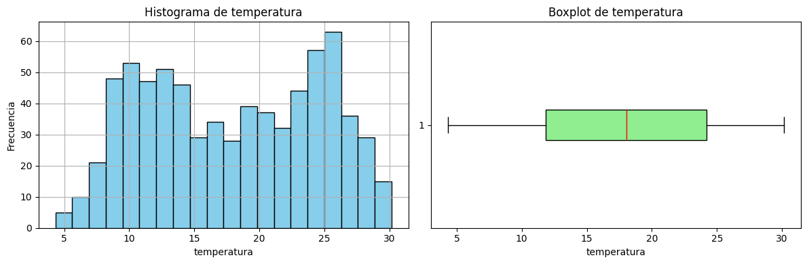
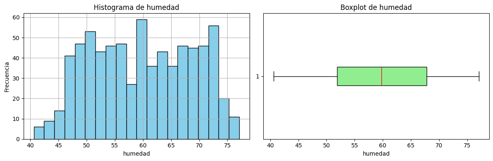
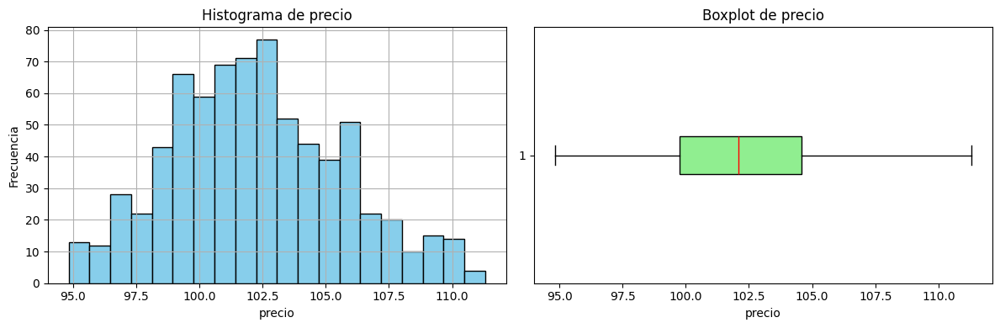
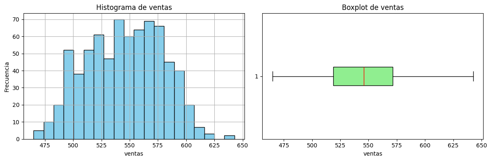
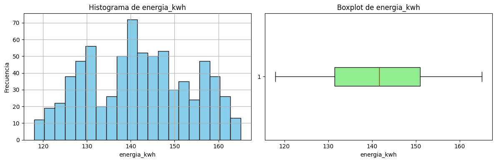
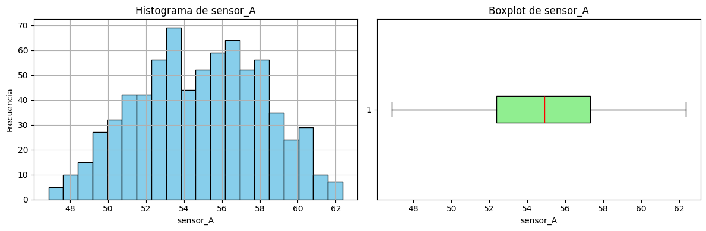
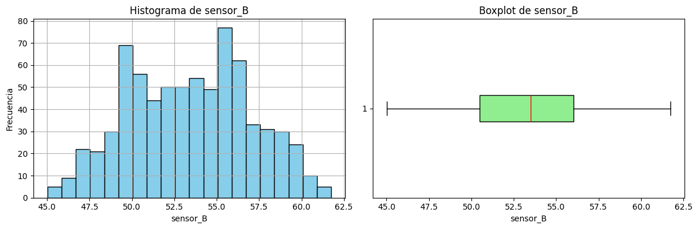
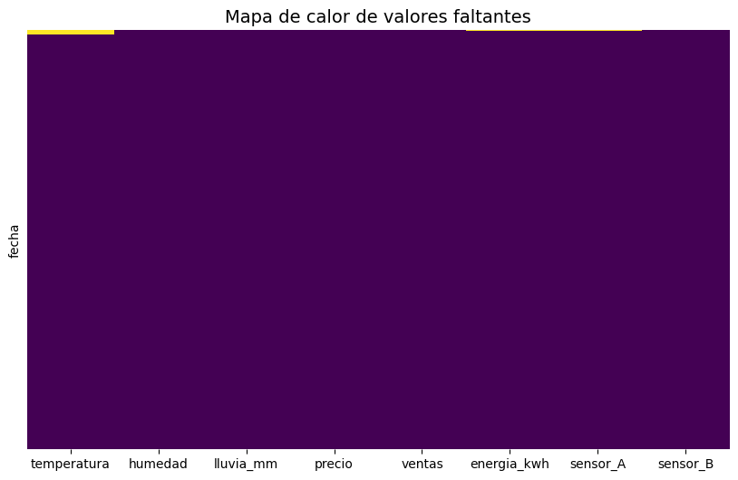
eda(df_bfill)
Hoja: data
Resumen:
| Cantidad de filas | Cantidad de columnas | Datos faltantes | Filas duplicadas | |
|---|---|---|---|---|
| Resumen | 731 | 8 | 7 | 0 |
Encabezado:
| temperatura | humedad | lluvia_mm | precio | ventas | energia_kwh | sensor_A | sensor_B | |
|---|---|---|---|---|---|---|---|---|
| fecha | ||||||||
| 2023-01-01 | 21.38 | 60.67 | 0.00 | 99.68 | 527.2 | 120.04 | 50.476 | 51.647 |
| 2023-01-02 | 21.38 | 48.96 | 0.00 | 100.50 | 493.7 | 120.04 | 50.476 | 48.778 |
| 2023-01-03 | 21.38 | 48.73 | 0.00 | 100.86 | 487.7 | 119.11 | 52.349 | 48.953 |
| 2023-01-04 | 21.38 | 57.13 | 0.00 | 101.74 | 512.8 | 120.71 | 50.400 | 49.383 |
| 2023-01-05 | 21.38 | 55.49 | 2.79 | 101.77 | 477.4 | 119.39 | 50.400 | 46.964 |
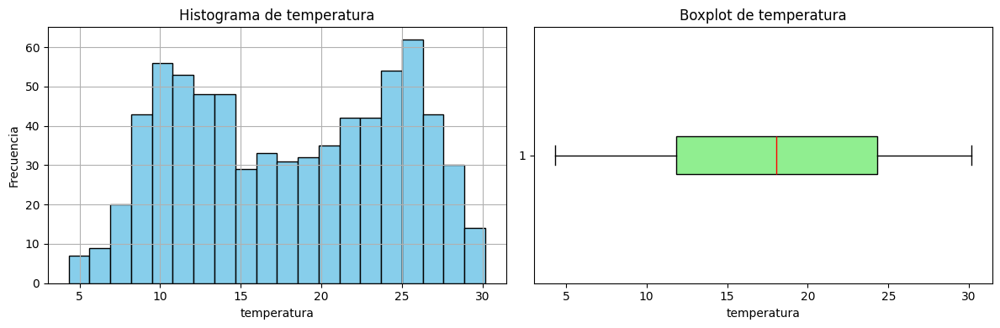
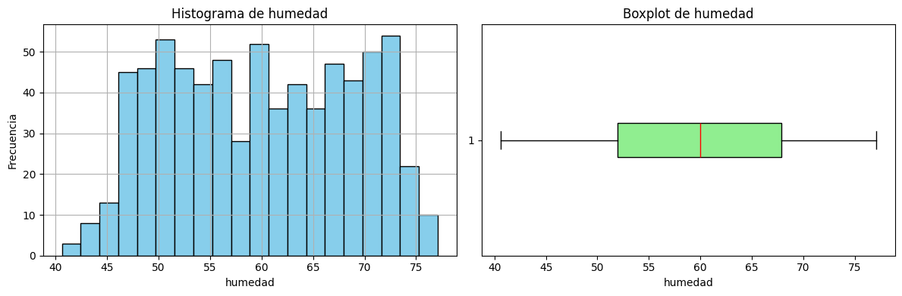
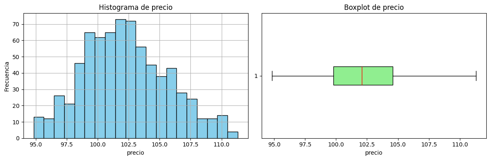
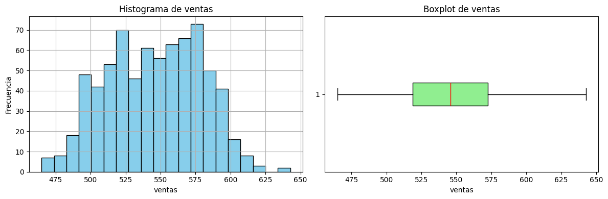
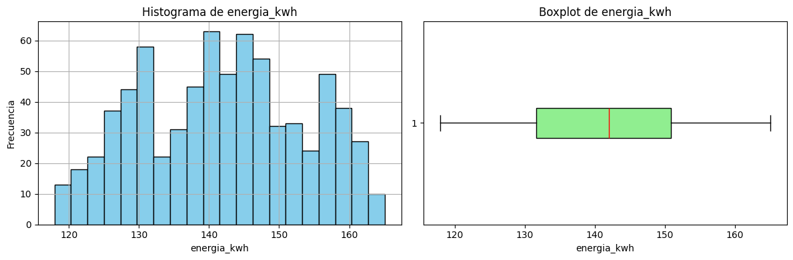
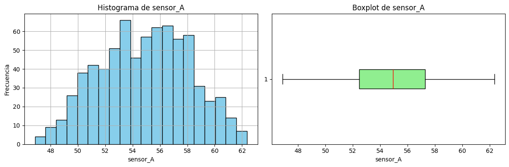
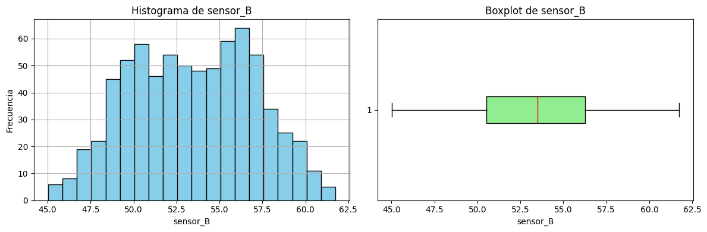
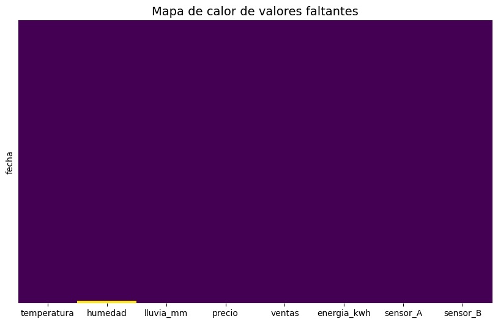
eda(df_interp)
Hoja: data
Resumen:
| Cantidad de filas | Cantidad de columnas | Datos faltantes | Filas duplicadas | |
|---|---|---|---|---|
| Resumen | 731 | 8 | 9 | 0 |
Encabezado:
| temperatura | humedad | lluvia_mm | precio | ventas | energia_kwh | sensor_A | sensor_B | |
|---|---|---|---|---|---|---|---|---|
| fecha | ||||||||
| 2023-01-01 | NaN | 60.67 | 0.00 | 99.68 | 527.2 | NaN | NaN | 51.647 |
| 2023-01-02 | NaN | 48.96 | 0.00 | 100.50 | 493.7 | 120.04 | 50.47600 | 48.778 |
| 2023-01-03 | NaN | 48.73 | 0.00 | 100.86 | 487.7 | 119.11 | 52.34900 | 48.953 |
| 2023-01-04 | NaN | 57.13 | 0.00 | 101.74 | 512.8 | 120.71 | 51.86175 | 49.383 |
| 2023-01-05 | NaN | 56.31 | 2.79 | 101.77 | 477.4 | 119.39 | 51.37450 | 46.964 |
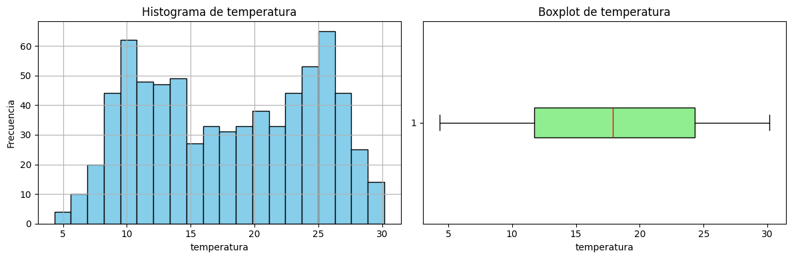
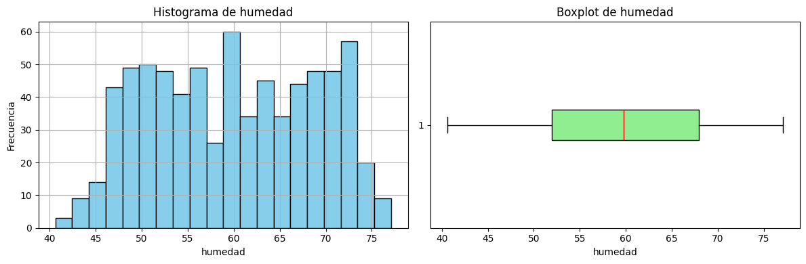
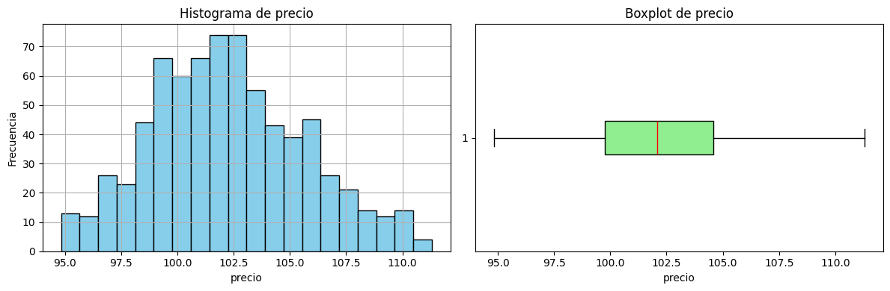
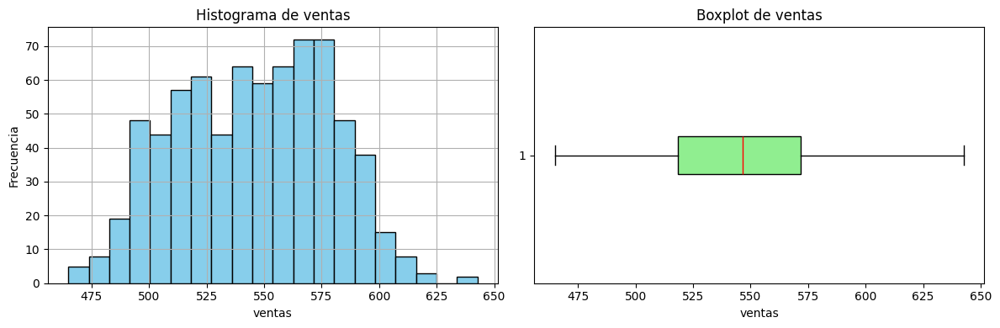
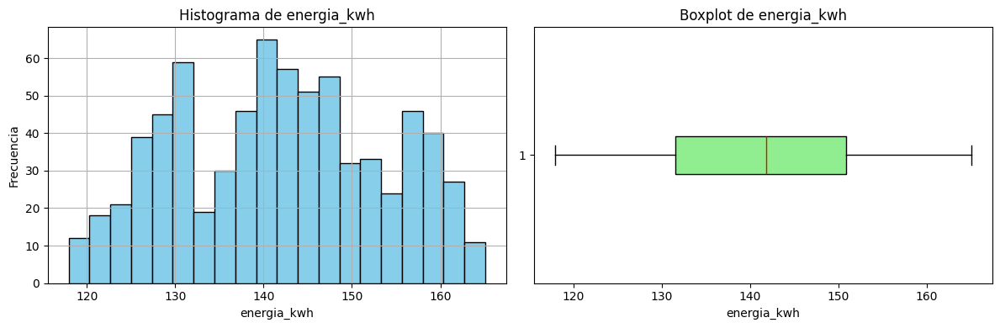
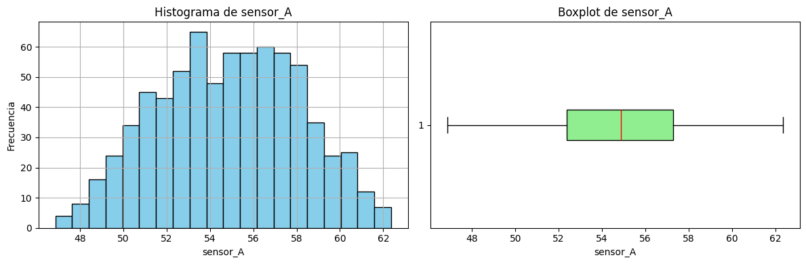
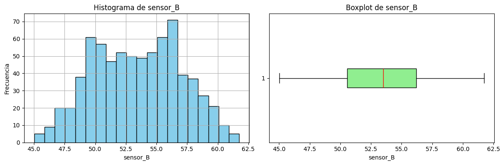
eda(df_time_interp)
Hoja: data
Resumen:
| Cantidad de filas | Cantidad de columnas | Datos faltantes | Filas duplicadas | |
|---|---|---|---|---|
| Resumen | 731 | 8 | 9 | 0 |
Encabezado:
| temperatura | humedad | lluvia_mm | precio | ventas | energia_kwh | sensor_A | sensor_B | |
|---|---|---|---|---|---|---|---|---|
| fecha | ||||||||
| 2023-01-01 | NaN | 60.67 | 0.00 | 99.68 | 527.2 | NaN | NaN | 51.647 |
| 2023-01-02 | NaN | 48.96 | 0.00 | 100.50 | 493.7 | 120.04 | 50.47600 | 48.778 |
| 2023-01-03 | NaN | 48.73 | 0.00 | 100.86 | 487.7 | 119.11 | 52.34900 | 48.953 |
| 2023-01-04 | NaN | 57.13 | 0.00 | 101.74 | 512.8 | 120.71 | 51.86175 | 49.383 |
| 2023-01-05 | NaN | 56.31 | 2.79 | 101.77 | 477.4 | 119.39 | 51.37450 | 46.964 |
eda(df_poly)
Hoja: data
Resumen:
| Cantidad de filas | Cantidad de columnas | Datos faltantes | Filas duplicadas | |
|---|---|---|---|---|
| Resumen | 731 | 8 | 16 | 0 |
Encabezado:
| temperatura | humedad | lluvia_mm | precio | ventas | energia_kwh | sensor_A | sensor_B | |
|---|---|---|---|---|---|---|---|---|
| fecha | ||||||||
| 2023-01-01 | NaN | 60.670000 | 0.00 | 99.68 | 527.2 | NaN | NaN | 51.647 |
| 2023-01-02 | NaN | 48.960000 | 0.00 | 100.50 | 493.7 | 120.04 | 50.476000 | 48.778 |
| 2023-01-03 | NaN | 48.730000 | 0.00 | 100.86 | 487.7 | 119.11 | 52.349000 | 48.953 |
| 2023-01-04 | NaN | 57.130000 | 0.00 | 101.74 | 512.8 | 120.71 | 53.118966 | 49.383 |
| 2023-01-05 | NaN | 58.293464 | 2.79 | 101.77 | 477.4 | 119.39 | 52.785899 | 46.964 |
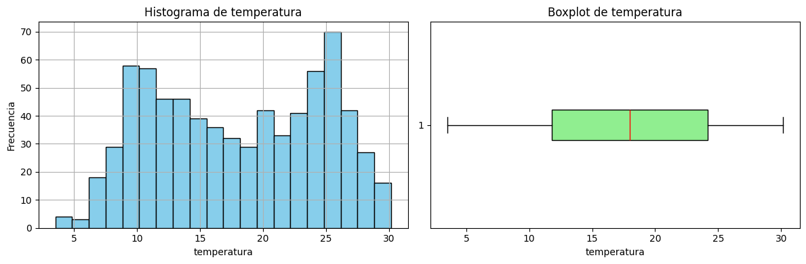
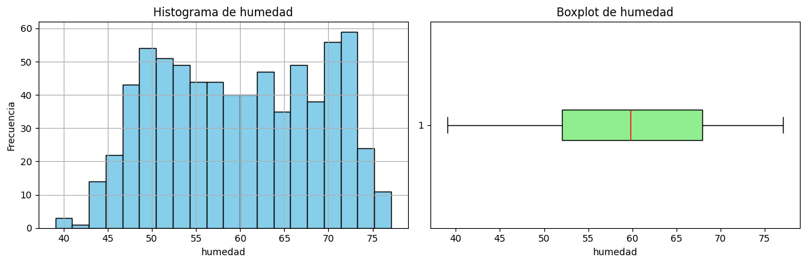
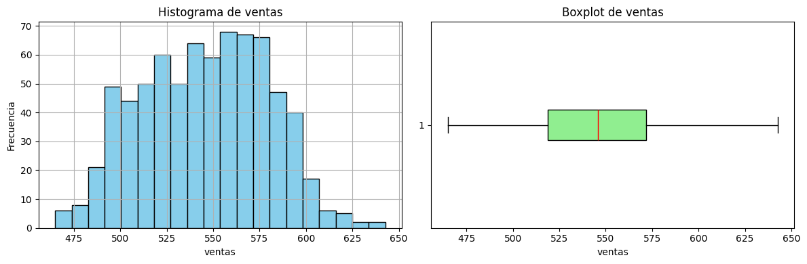
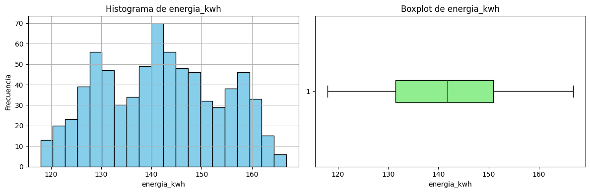
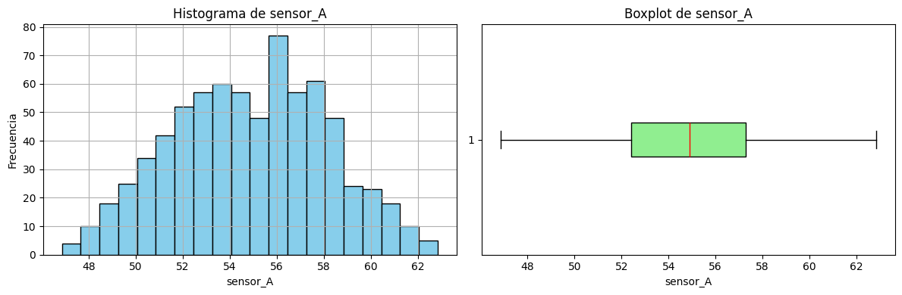
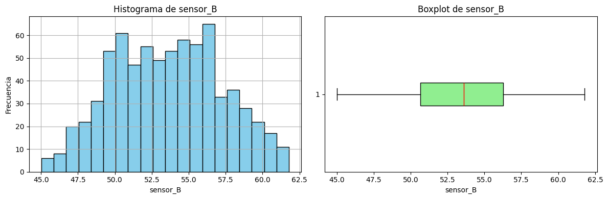
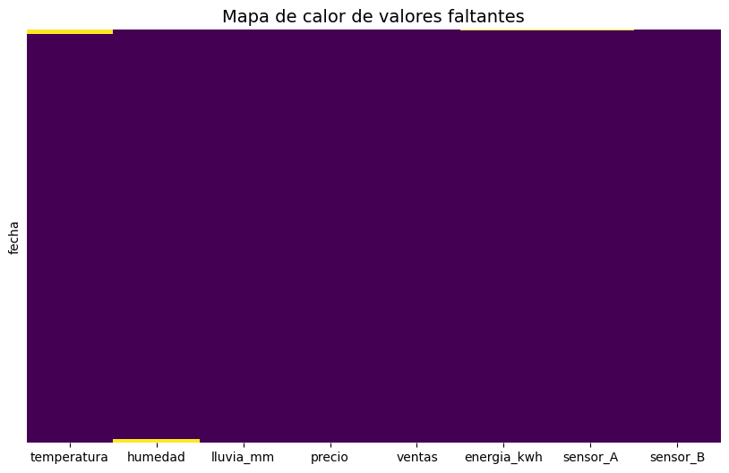